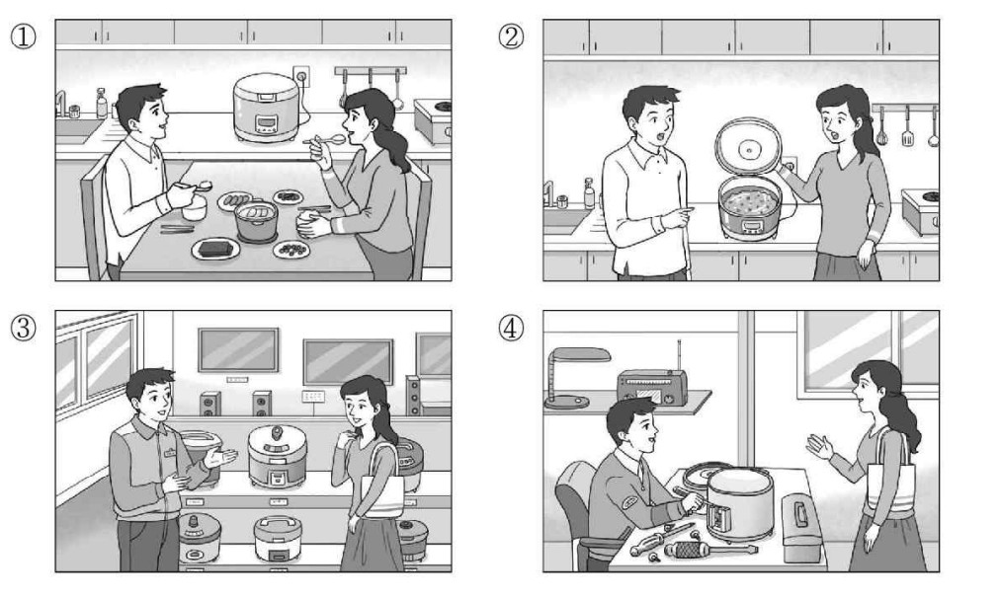
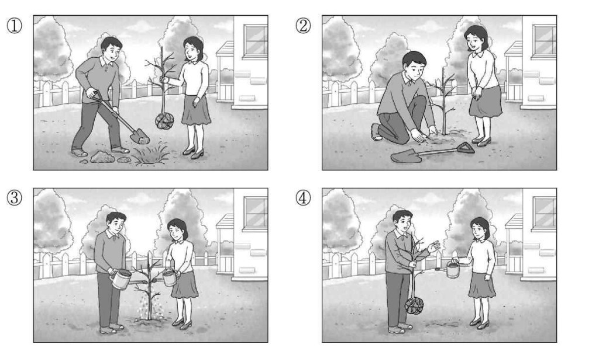
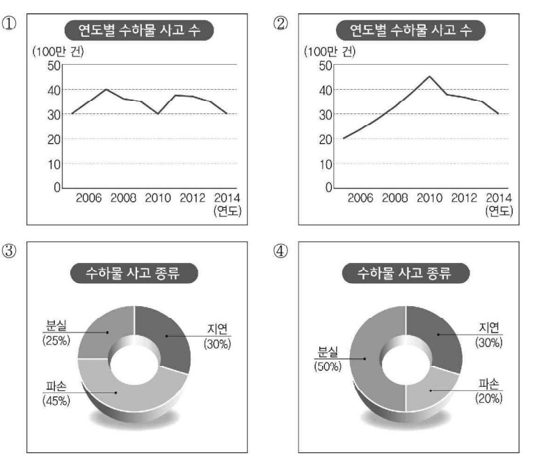

👨 남자: 어디 봐. 밥솥 버튼을 안 눌렀나 보네.
👩 여자: 이상하다. 분명히 눌렀는데.
👨 Nam: Để anh xem nào. Có vẻ như em đã quên chưa bấm nút nồi cơm điện rồi.
👩 Nữ: Kỳ lạ thật. Rõ ràng là em đã bấm rồi cơ mà.
🎯 Phân tích đáp án
Tại sao chọn ②? Trong đoạn hội thoại, người nữ đang hoang mang không hiểu tại sao cơm chưa chín (왜 밥이 안 됐지?). Người nam lại gần kiểm tra nồi cơm điện và chỉ ra lỗi là do cô ấy chưa bấm nút (밥솥 버튼을 안 눌렀나 보네). Bức tranh số 2 mô tả chính xác cảnh người nam đang đưa tay chỉ vào chiếc nồi cơm điện, còn người nữ thì mở nắp nồi ra với vẻ mặt bất ngờ và bối rối vì cơm bên trong chưa chín.
- Hình 1 sai vì hai người đang ngồi ăn cơm rất vui vẻ tại bàn ăn, hoàn toàn không khớp với tình huống "cơm chưa chín" ở trong bài.
- Hình 3 & Hình 4 sai vì đây là bối cảnh ở cửa hàng điện máy (có nhân viên bán hàng mặc đồng phục đang tư vấn cho nữ khách hàng mua nồi cơm điện). Cuộc hội thoại trong bài mang tính chất sinh hoạt vợ chồng/gia đình ở trong bếp.

👨 남자: 네. 조금만 더 파면 되니까 잠깐만 들고 계세요.
👩 여자: 알았어요. 그런데 다 심고 나면 물 좀 많이 줘야겠어요.
👨 Nam: Vâng đúng rồi. Tôi chỉ cần đào hố sâu thêm một chút nữa thôi, cô chịu khó cầm giữ cái cây một lát nhé.
👩 Nữ: Vâng, tôi biết rồi. Nhưng mà sau khi trồng xong thì chắc chúng ta phải tưới thật nhiều nước cho nó đấy.
🎯 Phân tích đáp án
Tại sao chọn ①? Qua đoạn hội thoại, ta thấy bối cảnh hai người đang trồng cây. Người nam đang thực hiện hành động "đào hố" (조금만 더 파면 되니까) và nhờ người nữ "cầm giữ cái cây" (잠깐만 들고 계세요). Bức tranh số 1 phác họa lại cực kỳ chính xác khoảnh khắc này: Người nam đang cầm xẻng để xúc đất đào hố, còn người nữ đứng đối diện đang dùng hai tay cầm giữ phần thân của cái cây non.
- Hình 2 sai vì người nam đang quỳ xuống dùng xẻng nhỏ để lấp đất, chiếc cây thì tự đứng thẳng dưới hố (người nữ không cầm giữ cái cây).
- Hình 3 & Hình 4 sai vì hai hình này miêu tả cảnh tưới nước cho cây sau khi đã trồng xong. Trong khi ở đoạn hội thoại, việc tưới nước mới chỉ là dự định "sau khi trồng xong" (다 심고 나면 물 좀 많이 줘야겠어요), chứ chưa diễn ra thực tế.

🎯 Phân tích đáp án
Tại sao chọn ②? Nội dung cốt lõi của bản tin nói về biểu đồ xu hướng số lượng sự cố hành lý: "2010년에 최고였다가 감소하고 있습니다" (Số lượng sự cố đã chạm đỉnh cao nhất vào năm 2010, sau đó sụt giảm). Nhìn vào biểu đồ đường số 2 (Hình 2), ta thấy đường đồ thị tăng dần lên điểm nhọn cao nhất tại cột mốc năm 2010, rồi sau đó dốc xuống ở các năm tiếp theo. Biểu đồ này phản ánh hoàn hảo 100% dữ kiện của đoạn văn.
- Hình 1 (Biểu đồ đường) sai vì đỉnh chóp cao nhất của đường đồ thị lại nằm ở năm 2008, trong khi năm 2010 lại là điểm chạm đáy. Điều này ngược lại hoàn toàn với dữ liệu "chạm đỉnh cao nhất vào năm 2010".
- Hình 3 & Hình 4 (Biểu đồ tròn) sai vì dữ liệu trong biểu đồ mâu thuẫn với nội dung "Sự cố giao trễ hành lý (지연) là chiếm tỷ lệ cao nhất". Ở Hình 3 thì Hư hỏng (파손) lại cao nhất với 45%, còn ở Hình 4 thì Thất lạc (분실) lại vươn lên cao nhất với 50%.
👨 남자: 아니에요. 급한 일이 있었다면서요.
👩 여자: _____________________________
👨 Nam: Không sao đâu cậu. Nghe bảo là cậu vướng phải chuyện gì đó gấp gáp lắm cơ mà.
👩 Nữ: ( Tớ thực sự rất muốn đến đó nhưng rốt cuộc lại chẳng đi được. )
- ① Bao giờ thì buổi thuyết trình bắt đầu vậy?
- ② Tớ thực sự rất muốn đến đó nhưng rốt cuộc lại chẳng đi được.
- ③ Chắc chắn là tớ sẽ không sắp xếp được thời gian đâu.
- ④ Rốt cuộc là có chuyện gì đột ngột xảy ra thế?
🎯 Phân tích đáp án
Tại sao chọn ②? Người nữ đang cảm thấy có lỗi vì vắng mặt tại buổi thuyết trình. Khi người nam thông cảm và nhắc đến lý do "nghe bảo cậu có việc gấp", người nữ cần một câu đáp lại nhằm xoa dịu sự áy náy. Câu phản hồi "꼭 가려고 했는데 못 갔어요" (Tớ đã định đi bằng mọi giá rồi nhưng lại không đi được) là câu trả lời mang đầy sự chân thành và vô cùng logic với ngữ cảnh xin lỗi ở trên.
- ① Sai vì ở đầu đoạn hội thoại người nữ đã hỏi thăm "Buổi thuyết trình KẾT THÚC TỐT ĐẸP CHỨ?" (발표회 잘 끝났어요?). Tức là sự kiện đã xong xuôi rồi, việc hỏi lại "Bao giờ bắt đầu" là cực kỳ vô lý.
- ③ Sai vì cấu trúc "도저히 안 될 것 같아요" (Chắc chắn không được đâu) dùng để từ chối một việc ở TƯƠNG LAI. Còn sự kiện này thì đã qua rồi.
- ④ Sai vì người bị vướng việc đột xuất là CHÍNH NGƯỜI NỮ, nên cô ấy không thể nào ngáo ngơ đi hỏi lại người nam "Có việc gì xảy ra thế?" được.
👩 여자: (놀란 어조로) 아니, 지난주에 준 건 벌써 다 쓴 거야?
👨 남자: _____________________________
👩 Nữ: (Với giọng ngạc nhiên) Cái gì? Mới đưa cho tuần trước mà giờ con đã tiêu sạch sành sanh hết rồi á?
👨 Nam: ( Vẫn còn thừa một ít nhưng vì con có món đồ cần phải mua thêm ạ. )
- ① Từ giờ trở đi con mong mẹ sẽ biết chi tiêu tiết kiệm hơn ạ.
- ② Vì mẹ đã cho con rất nhiều tiền tiêu vặt nên thế là đủ rồi ạ.
- ③ Thực ra tiền vẫn còn dư một ít nhưng vì con có món đồ cần phải mua thêm ạ.
- ④ Nếu cần thêm tiền thì bất cứ lúc nào con cũng sẽ nói để xin mẹ.
🎯 Phân tích đáp án
Tại sao chọn ③? Khi người mẹ hoảng hốt hỏi: "Con đã tiêu sạch hết rồi à?" (벌써 다 쓴 거야?). Cậu con trai cần đưa ra một lý do hợp lý để biện minh cho việc xin thêm tiền dù tiền cũ vẫn chưa cạn kiệt. Câu trả lời "아직 남기는 했는데 살게 있어서요" (Thực ra tiền vẫn còn thừa một ít nhưng con có món đồ cần phải mua nên mới xin thêm ạ) là một lời giải thích hoàn toàn logic và khéo léo để dập tắt cơn thịnh nộ của người mẹ.
- ① Sai vì cậu con trai đi xin tiền mẹ nhưng lại dạy đời bảo MẸ hãy "chi tiêu tiết kiệm" (아껴 쓰면 좋겠는데요) là vô cùng hỗn láo và sai chủ ngữ.
- ② Sai vì cậu ta đang THIẾU TIỀN VÀ XIN THÊM (용돈이 부족한데 좀 더 주시면 안 될까요). Bảo "mẹ cho nhiều thế là đủ rồi" (충분했어요) thì đi xin thêm làm cái gì nữa.
- ④ Sai vì bà mẹ đang chất vấn việc tiêu tiền quá nhanh. Trả lời cợt nhả "Lúc nào cần con sẽ xin tiếp" không giải quyết được câu hỏi "Tiêu sạch rồi à?" của mẹ.
👩 여자: 좋아. 그런데 지난번처럼 졌다고 화내기 없기다.
👨 남자: _____________________________
👩 Nữ: Duyệt luôn. Cơ mà cấm cái trò thua xong rồi lại giận dỗi hậm hực như lần trước đấy nhé.
👨 Nam: ( Ơ kìa em có thèm làm thế bao giờ đâu mà chị lại nói vậy? )
- ① Lần này em cũng là người giành chiến thắng đúng không?
- ② Ơ kìa em có thèm làm thế bao giờ đâu mà chị lại nói vậy?
- ③ Em thấy cái trò đánh cầu lông này chả có gì thú vị sất.
- ④ Nếu chị mà cứ giận dỗi liên tục thì em sẽ không thèm đánh với chị nữa đâu.
🎯 Phân tích đáp án
Tại sao chọn ②? Người chị nhắc lại chuyện xấu hổ cũ để giao kèo: "지난번처럼 졌다고 화내기 없기다" (Cấm chơi trò thua xong giận dỗi như lần trước). Để chữa ngượng và chối bay chối biến cái tính xấu đó, cậu em trai phản ứng bằng câu "내가 언제 그랬다고 그래?" (Em làm thế bao giờ mà chị lại vu khống cho em thế?) là một diễn biến đùa giỡn qua lại cực kỳ tự nhiên giữa hai chị em.
- ① Sai vì người chị đã bóc phốt là lần trước cậu em ĐÃ THUA RỒI MỚI TỨC TỐI GIẬN DỖI (졌다고 화내기). Nên cậu ta không thể ảo tưởng tự hào bảo "Lần trước em cũng thắng" được.
- ③ Sai vì chính cậu em là người CHỦ ĐỘNG RỦ RÊ (나가서 배드민턴 치자) vì ở nhà chán. Rủ người ta xong lại kêu "chơi cầu lông chả có gì thú vị" thì thật là ngớ ngẩn.
- ④ Sai vì người hay cáu bẳn giận dỗi (화내기) là CẬU EM TRAI chứ không phải người chị. Cậu ta không có tư cách gì để dọa nạt ngược lại chị mình.
👩 여자: 어, 맞다. 민호 씨 집들이 하죠? 깜박 잊고 있었어요.
👨 남자: _____________________________
👩 Nữ: Ơ, đúng rồi nhỉ. Anh Min-ho chuẩn bị làm tiệc tân gia phải không? Tôi quên béng mất đấy.
👨 Nam: ( Chắc là do cô bận rộn nhiều việc quá nên mới đãng trí như vậy. )
- ① Chắc là do cô bận rộn nhiều việc quá nên mới đãng trí như vậy.
- ② Để chuẩn bị cho bữa tiệc chắc là cô đã bận rộn vất vả lắm nhỉ.
- ③ Vô cùng cảm ơn cô vì đã gửi lời mời tôi đến tham dự.
- ④ Do không biết là có tổ chức tiệc tân gia nên tôi đã không đi.
🎯 Phân tích đáp án
Tại sao chọn ①? Khi người nữ hoảng hốt thú nhận rằng mình đã quên béng mất tiêu lịch dự tiệc tân gia (깜박 잊고 있었어요), người nam sẽ cần một câu đáp lại mang tính chất an ủi, xoa dịu. Câu "너무 바쁘셔서 그랬겠지요" (Chắc là do cô bận rộn nhiều việc quá nên mới lỡ quên như vậy) là một câu cảm thông cực kỳ lịch sự và tự nhiên.
- ② Sai vì người "bận rộn chuẩn bị cho bữa tiệc" (준비하느라 바빴겠어요) là anh KIM MIN-HO (chủ nhà), chứ không phải là cô gái (khách mời).
- ③ Sai vì người nam và người nữ ĐỀU LÀ KHÁCH ĐƯỢC ANH MIN-HO MỜI ĐẾN CHƠI. Người nam không thể nào quay sang cảm ơn người nữ vì đã mời mình được.
- ④ Sai vì bữa tiệc tân gia được tổ chức vào TUẦN TỚI (다음 주), sự kiện này chưa hề diễn ra nên không thể dùng thì quá khứ "Đã không đi" (안 갔어요) được.
👩 여자: 아니요, 원장님. 학생들한테 신청서를 나눠 줬지만 아직까지는 많지 않은데요.
👨 남자: _____________________________
👩 Nữ: Dạ thưa Viện trưởng là không đâu ạ. Dù tôi đã đi rải phát giấy đăng ký cho các em học sinh hết rồi nhưng tính đến hiện tại số lượng nộp lại vẫn còn khá lèo tèo ạ.
👨 Nam: ( Nếu vậy, do thời hạn nộp vẫn còn dư dả nên chúng ta cứ tạm chờ thêm xem sao nhé? )
- ① Nếu vậy thì khoảng bao giờ giấy đăng ký mới được soạn thảo hoàn tất ạ?
- ② Thật vậy sao? Thật may là giải đấu đã diễn ra thành công tốt đẹp.
- ③ Thật vậy sao? Vậy là đã có rất nhiều học sinh nộp đơn đăng ký rồi nhỉ.
- ④ Nếu vậy, do thời hạn nộp vẫn còn dư dả nên chúng ta cứ tạm chờ thêm xem sao nhé?
🎯 Phân tích đáp án
Tại sao chọn ④? Người nữ báo cáo một tin buồn rằng số lượng nộp đơn đăng ký hiện tại vẫn còn rất hẻo (아직까지는 많지 않은데요). Để trấn an tình hình, người nam (Viện trưởng) đề xuất phương án: "그럼 기간이 좀 남았으니까 기다려 볼까요? (Do vẫn còn thời gian nên chúng ta cứ bình tĩnh chờ thêm xem sao nhé?)" là một sự phản hồi cực kỳ logic và ra dáng lãnh đạo.
- ① Sai vì giấy đăng ký ĐÃ ĐƯỢC SOẠN XONG VÀ ĐÃ ĐƯỢC PHÁT CHO HỌC SINH (나눠 줬지만). Vấn đề là tụi học sinh lười chưa thèm điền để nộp lại, chứ không phải là giấy chưa được "Hoàn thành" (완성될까요).
- ② Sai vì hiện tại mới chỉ là giai đoạn NHẬN ĐƠN ĐĂNG KÝ (신청은 많이 들어왔습니까), giải đấu vẫn chưa hề diễn ra nên không thể hớn hở bảo "Giải đấu đã kết thúc tốt đẹp" (대회가 잘 끝나서) được.
- ③ Sai vì nó đi ngược lại hoàn toàn với báo cáo của người nữ. Người nữ vừa bảo là "Vẫn chưa có nhiều đâu" (많지 않은데요), ông viện trưởng lại điếc tai khen "Đăng ký nhiều nhỉ" (많이 했군요) là cực kỳ vô lý.
👩 여자: 알겠어요. 어? 근데 셔츠에 단추가 떨어졌네요. 금방 달아 줄 테니까 줘 봐요.
👨 남자: 아, 여기. 이걸 못 봤네요. 아까 입을 때는 괜찮았는데...
👩 여자: 지금 바로 돼요. 잠깐만 기다려 봐요.
👩 Nữ: Vâng em biết rồi. Ơ kìa? Cúc áo sơ mi của anh bị rớt mất tiêu rồi này. Đưa áo đây cho em, em khâu đính lại cái cúc cho nhanh.
👨 Nam: À đây. Nãy giờ anh không để ý thấy. Lúc nãy mặc vào thì vẫn thấy bình thường cơ mà...
👩 Nữ: Khâu phát là xong ngay thôi. Anh đứng yên chờ em một tí nhé.
- ① Tiến hành khâu đính lại chiếc cúc áo.
- ② Đưa chiếc áo sơ mi ra.
- ③ Mặc chiếc áo sơ mi vào người.
- ④ Thắt chiếc cà vạt.
🎯 Phân tích đáp án
Tại sao chọn ①? Đề bài yêu cầu tìm "Hành động TIẾP THEO của người Nữ". Khi phát hiện cúc áo của người chồng bị rớt, người vợ yêu cầu: "금방 달아 줄 테니까 줘 봐요" (Đưa áo đây em đính lại cúc áo cho). Người chồng lập tức làm theo và đưa chiếc áo (아, 여기). Vậy hành động ngay tiếp theo mà cô vợ chắc chắn phải làm khi cầm lấy chiếc áo là Khâu đính lại chiếc cúc áo (단추를 단다).
- ②, ③ Sai vì hành động cởi áo và "Đưa chiếc áo" (셔츠를 준다) hoặc "Mặc áo" (셔츠를 입는다) là hành động của NGƯỜI CHỒNG. Đề bài đang hỏi hành động của người vợ cơ mà.
- ④ Sai vì người vợ bảo là ưu tiên khâu cúc áo cho người chồng trước (지금 바로 돼요. 잠깐만 기다려 봐요 - Khâu nhanh thôi, anh cứ đứng đợi xíu). Việc "Thắt cà vạt" (넥타이를 맨다) sẽ là hành động diễn ra SAU ĐÓ, sau khi người chồng đã nhận lại áo và mặc vào tử tế.
👨 남자: 졸리면 기숙사에 들어가서 일찍 자고 아침에 일어나서 하든지.......
👩 여자: 전 아침잠이 많아서 일찍 못 일어나요. 잠 좀 깨게 잠깐 나가서 산책해야겠어요. 들어올 때 커피라도 사 올까요, 선배?
👨 남자: 아니야, 됐어. 좀 전에 마셨어.
👨 Nam: Buồn ngủ quá thì chạy về ký túc xá mà lăn ra ngủ sớm đi, rồi sáng mai ráng dậy sớm mà cày cuốc tiếp...
👩 Nữ: Tớ thì lại bị cái bệnh siêu lười dậy sớm buổi sáng. Thôi để tớ chạy ra ngoài đi dạo tản bộ một lát cho tỉnh ngủ vậy. Lúc về em tiện thể mua ly cà phê cho anh luôn nhé tiền bối?
👨 Nam: Thôi khỏi cần em ơi. Anh vừa nốc một ly lúc nãy rồi.
- ① Ngồi yên đọc sách.
- ② Đi mua cà phê.
- ③ Đi dạo tản bộ.
- ④ Đi về ký túc xá.
🎯 Phân tích đáp án
Tại sao chọn ③? Đề bài yêu cầu tìm "Hành động TIẾP THEO của người Nữ". Khi cơn buồn ngủ ập đến, cô gái đã đưa ra quyết định chốt hạ: "잠 좀 깨게 잠깐 나가서 산책해야겠어요" (Để cho tỉnh ngủ thì tôi phải ra ngoài đi dạo tản bộ một lát mới được). Cô ấy định mua thêm cà phê trên đường về nhưng người nam đã từ chối. Vì vậy, hành động duy nhất cô ấy thực hiện ngay bây giờ khi rời khỏi ghế là Đi dạo (산책을 한다).
- ① Sai vì cô gái đang buồn ngủ rũ mắt, cô ấy quyết định DỪNG việc đọc sách lại để đi dạo cho tỉnh táo rồi mới về đọc tiếp (들어올 때).
- ② Sai vì cô gái có ý định mua cà phê CHO NGƯỜI NAM, nhưng người nam đã gạt phắt đi từ chối (아니야, 됐어). Vì vậy cô ấy không cần mua cà phê nữa.
- ④ Sai vì việc "chạy về ký túc xá ngủ" (기숙사에 들어가서) là gợi ý của NGƯỜI NAM, và cô gái đã TỪ CHỐI gợi ý đó vì biện cớ mình không thể thức dậy sớm vào buổi sáng được (일찍 못 일어나요).
👩 여자: 잠깐 서류 받으러 홍보부에 다녀왔는데요. 무슨 일로 찾으셨어요?
👨 남자: 거래처에 보낸 사진이 제품하고 다르다고 확인하러 오셨었어요. 빨리 연락부터 드려 보세요.
👩 여자: 알겠어요. 그럼 이 서류 복사 좀 부탁 드릴게요.
👩 Nữ: Tôi vừa mới chạy qua Phòng Quan hệ công chúng một lát để lấy tài liệu ấy mà. Trưởng phòng tìm tôi có chuyện gì vậy anh?
👨 Nam: Trưởng phòng đích thân sang đây để xác nhận lại chuyện bức ảnh gửi cho đối tác có chi tiết không giống với sản phẩm thực tế đấy. Cô mau mau gọi điện liên lạc lại cho Trưởng phòng trước đi.
👩 Nữ: Tôi biết rồi. Vậy anh làm ơn photo xấp tài liệu này giúp tôi với nhé.
- ① Tiến hành photo tài liệu.
- ② Đi sang Phòng Quan hệ công chúng.
- ③ Liên lạc cho Trưởng phòng.
- ④ Gửi bức ảnh cho bên đối tác.
🎯 Phân tích đáp án
Tại sao chọn ③? Đề bài yêu cầu tìm "Hành động TIẾP THEO của người Nữ". Người nam hối thúc người nữ: "빨리 연락부터 드려 보세요" (Cô hãy nhanh chóng liên lạc lại (cho Trưởng phòng) TRƯỚC ĐI). Từ "부터" (trước tiên) nhấn mạnh sự ưu tiên của hành động này. Người nữ lập tức đồng ý: "알겠어요" (Tôi biết rồi). Vì vậy, hành động ngay tức khắc tiếp theo mà cô ấy phải làm là Liên lạc cho Trưởng phòng (부장에게 연락한다).
- ① Sai vì người nữ đã NHỜ NGƯỜI NAM LÀM GIÚP (이 서류 복사 좀 부탁 드릴게요 - Nhờ anh photo giúp). Do đó, người đi photo là người nam.
- ② Sai vì người nữ VỪA MỚI ĐI VỀ XONG (홍보부에 다녀왔는데요), cô ấy không đi lại đó nữa.
- ④ Sai vì ảnh đã được gửi đi từ trước đó rồi (거래처에 보낸 사진 - Bức ảnh ĐÃ GỬI), vấn đề hiện tại là bức ảnh bị sai lệch nên phải liên lạc với sếp để xử lý sự cố.
👨 남자: 네, 조금 전에 들어왔습니다. 그런데요, 주방장님. 정리하다 보니 안 들어온 것들이 있는데 어떻게 할까요?
👩 여자: 빠진 걸 알려 주면 제가 주문서를 다시 확인하고 업체에 전화해 보겠습니다.
👨 남자: 네. 그럼 조리실 앞에 있는 재료들은 먼저 보관 창고로 옮기겠습니다.
👨 Nam: Dạ vâng, bên cung cấp vừa mới giao đến cách đây một lát thôi ạ. Cơ mà Bếp trưởng ơi, nãy giờ trong lúc cất dọn tôi phát hiện ra có vài món vẫn chưa được giao tới, giờ chúng ta xử lý sao đây ạ?
👩 Nữ: Cậu hãy báo cho tôi biết những món bị thiếu là gì, tôi sẽ tự mình kiểm tra lại đơn đặt hàng rồi sau đó sẽ gọi điện cho phía đơn vị cung cấp xem sao.
👨 Nam: Vâng ạ. Vậy thì tôi sẽ ưu tiên mang đống nguyên liệu đang chất trước cửa phòng bếp vào trong kho bảo quản trước nhé.
- ① Gọi điện thoại cho đơn vị cung cấp.
- ② Kiểm tra lại đơn đặt hàng.
- ③ Khuân vác nguyên liệu di chuyển vào trong kho bảo quản.
- ④ Đọc tên thông báo những nguyên liệu bị thiếu sót.
🎯 Phân tích đáp án
Tại sao chọn ②? Đề bài yêu cầu tìm "Hành động TIẾP THEO của người Nữ". Bếp trưởng (người nữ) nói rõ chuỗi hành động mình sẽ tự làm: "제가 주문서를 다시 확인하고 업체에 전화해 보겠습니다" (Tôi sẽ kiểm tra lại đơn đặt hàng RỒI MỚI gọi điện cho bên cung cấp). Theo đúng trình tự thời gian (được liên kết bằng từ 고 - và/rồi), hành động diễn ra ĐẦU TIÊN của người nữ là "Kiểm tra lại đơn đặt hàng" (주문서를 확인한다).
- ① Sai vì hành động gọi điện cho đơn vị cung cấp (업체에 전화한다) là hành động diễn ra SAU KHI đã kiểm tra xong đơn đặt hàng.
- ③ Sai vì việc "chuyển nguyên liệu vào kho" (창고로 옮기겠습니다) là công việc tay chân do NGƯỜI NAM chủ động nhận làm.
- ④ Sai vì việc "thông báo những món bị thiếu" (빠진 걸 알려 주면) là nghĩa vụ báo cáo của NGƯỜI NAM đối với Bếp trưởng.
👨 남자: 좋아하실까? 지난번에 사 드린 블라우스는 잘 안 입으시던데, 옷보다 상품권을 드리는 건 어때?
👩 여자: 그것보단 엄마가 보고 직접 고르시는 게 제일 좋은데.
👨 남자: 그럼 다음 주말에 모시고 가자.
👨 Nam: Liệu mẹ có ưng không nhỉ? Chiếc áo blouse đợt trước anh mua tặng mẹ thấy mẹ chả mấy khi mặc cả, thay vì mua quần áo thì hay là tụi mình biếu mẹ phiếu quà tặng (voucher) đi?
👩 Nữ: Em thấy tốt nhất là cứ để mẹ tự đi xem rồi tự tay lựa chọn theo ý mình thì hơn.
👨 Nam: Nếu vậy thì cuối tuần sau anh em mình đưa mẹ đi cùng luôn nhé.
- ① Người đàn ông đã từng có tiền lệ mua áo blouse tặng cho mẹ của mình.
- ② Người đàn ông vừa mới đi trung tâm thương mại về cùng với mẹ vào hôm nay.
- ③ Người phụ nữ đang rất có thành ý muốn tặng phiếu quà tặng (voucher) cho mẹ.
- ④ Người phụ nữ sẽ đi mua quà cho mẹ ngay trong ngày hôm nay.
🎯 Phân tích đáp án
Tại sao chọn ①? Người anh trai than vãn: "지난번에 사 드린 블라우스는 잘 안 입으시던데" (Cái áo blouse lần trước anh mua tặng thì mẹ chả mấy khi mặc). Điều này chứng minh rằng trong quá khứ, người nam đã từng mua áo blouse tặng mẹ (남자는 어머니의 블라우스를 산 적이 있다). Đáp án ① hoàn toàn khớp với dữ kiện này.
- ② Sai vì cả hai người CHƯA HỀ ĐI ĐÂU CẢ, họ đang bàn bạc rủ nhau và chốt lại là "Cuối tuần sau mới đưa mẹ đi" (다음 주말에 모시고 가자).
- ③ Sai vì ý tưởng "tặng phiếu quà tặng (상품권을 드리는 건 어때?)" là lời đề xuất của NGƯỜI ANH TRAI (Nam). Người em gái phản đối và muốn mẹ "Tự tay lựa chọn" (직접 고르시는 게).
- ④ Sai vì kế hoạch đi mua quà vào "hôm nay" (오늘) đã bị BÁC BỎ VÀ LÙI LẠI SANG CUỐI TUẦN SAU (다음 주말에 모시고 가자) để đi chung với mẹ.
- ① Lịch trình mở màn đầu tiên của ngày hôm nay là ghé thăm thư viện.
- ② Địa điểm dừng chân cuối cùng trong chuỗi tham quan là nhà thi đấu thể thao.
- ③ Mọi người sẽ được nhận quà lưu niệm sau khi dùng bữa xong.
- ④ Mọi người sẽ cùng nhau xem video giới thiệu sau khi dạo quanh ký túc xá.
🎯 Phân tích đáp án
Tại sao chọn ③? Trình tự lịch trình trong bài rất rõ ràng: Dùng bữa tại nhà ăn (식사를 하시면) -> Lịch trình kết thúc (일정이 끝납니다) -> Lúc ra về sẽ được nhận quà ngay tại cửa nhà ăn (돌아가실 때에는 식당 입구에서 기념품을 받아). Tức là, việc "Ăn uống xong xuôi rồi thì sẽ được nhận quà lưu niệm (식사 후에 기념품을 받을 수 있다)" là hoàn toàn chính xác theo đúng thứ tự thời gian.
- ① Sai vì lịch trình đầu tiên là TẬP TRUNG TẠI HỘI TRƯỜNG XEM VIDEO (먼저 강당에서... 동영상을 보신 후에), chứ không phải xông thẳng vào Thư viện.
- ② Sai vì lộ trình tham quan là "Thư viện -> Thể dục -> Ký túc xá (기숙사 순으로)". Nơi tham quan cuối là Ký túc xá, và nơi dừng chân cuối cùng của sự kiện là Nhà ăn sinh viên (학생 식당). Thể dục nằm ở khúc giữa.
- ④ Sai vì việc "Xem video" (동영상을 보신 후에) diễn ra ĐẦU TIÊN (먼저) ở hội trường. Chứ không phải đi rã rời dạo quanh Ký túc xá xong xuôi rồi mới bị bắt xem video.
- ① Những người bị thương đã được băng bó chữa trị và sau đó trở về nhà an toàn.
- ② Vụ tai nạn xảy ra do sự đâm sầm va chạm mạnh giữa hai chiếc xe ô tô con với nhau.
- ③ Rất có khả năng sương mù dày đặc chính là thủ phạm gây ra vụ tai nạn này.
- ④ Công tác điều tra lấy lời khai đối với các tài xế gây tai nạn đã được khép lại hoàn tất.
🎯 Phân tích đáp án
Tại sao chọn ③? Bản tin dẫn lại lời nhận định của cảnh sát: "경찰은 짙은 안개로 앞이 보이지 않아 사고가 난 것으로 보고 있습니다" (Cảnh sát cho rằng sương mù dày đặc che khuất tầm nhìn chính là thủ phạm gây ra tai nạn). Cụm từ "보고 있습니다" (Đang nhìn nhận rằng/Cho rằng) thể hiện sự phỏng đoán từ cơ quan chức năng, hoàn toàn tương đồng với cụm từ "보인다" (Có vẻ như). Vậy nên đáp án ③ "안개 때문에 사고가 난 것으로 보인다 (Sương mù có vẻ như là nguyên nhân gây tai nạn)" là sự tái hiện chính xác nhất.
- ① Sai vì những người bị thương hiện VẪN ĐANG NẰM VIỆN (인주병원에서 치료를 받고 있습니다), không hề có chuyện đã được xuất viện "trở về nhà" (귀가했다) ngay được.
- ② CẨN THẬN BẪY TỪ VỰNG: Đây là vụ va chạm đẫm máu giữa một chiếc XE TẢI (화물차) và một chiếc XE CON (승용차). Đáp án ② dám phán là hai chiếc xe con đâm nhau (승용차 두 대) là sai bét nhè về đối tượng.
- ④ Sai vì quá trình điều tra VẪN ĐANG DIỄN RA (조사 중입니다), công an chưa chốt hồ sơ nên không thể bảo là "Công tác điều tra đã kết thúc" (조사는 끝났다) được.
👩 여자: 저는 30년 동안 교직에 있으면서 역사를 가르쳤습니다. 퇴직하고 어떻게 노후를 보낼까 고민하고 있었어요. 그런데 아들이 제 경험을 살려 보라며 이 일을 적극 권했습니다. 그래서 지난달부터 일요일마다 문화센터에서 우리 지역 문화재를 소개하는 강의를 하고 있죠.
👩 Nữ: Vốn dĩ, tôi đã từng có ngót nghét 30 năm đứng trên bục giảng để cống hiến cho sự nghiệp giảng dạy bộ môn Lịch sử. Khi mới vừa cầm sổ hưu, tôi đã phải đau đầu suy nghĩ không biết mình nên tận hưởng nốt phần đời tuổi già còn lại như thế nào cho bớt vô vị. Thấy vậy, con trai tôi đã liên tục động viên và hối thúc tôi nên thử phát huy những kinh nghiệm xương máu của mình để dấn thân vào công việc này. Nghe lời con, kể từ tháng trước, cứ đều đặn mỗi Chủ nhật hàng tuần, tôi lại đến Trung tâm văn hóa để đứng lớp thuyết giảng, giới thiệu cho mọi người nghe về những tinh hoa di sản văn hóa của địa phương mình.
- ① Con trai của người phụ nữ đã kịch liệt phản đối việc mẹ mình tham gia vào công việc này.
- ② Người phụ nữ đã có thâm niên 30 năm làm công việc quảng bá di sản văn hóa.
- ③ Thực chất người phụ nữ đã âm thầm làm công việc này ngay từ khi còn chưa nghỉ hưu.
- ④ Cứ mỗi tuần, người phụ nữ lại đều đặn đứng lớp thuyết giảng tại trung tâm văn hóa của địa phương.
🎯 Phân tích đáp án
Tại sao chọn ④? Người phụ nữ chia sẻ về lịch làm việc hiện tại của mình: "지난달부터 일요일마다 문화센터에서... 강의를 하고 있죠" (Kể từ tháng trước, MỖI CHỦ NHẬT tôi đều có mặt tại Trung tâm văn hóa để đứng lớp giảng dạy). Việc làm một hành động vào "Mỗi Chủ nhật" (일요일마다) đồng nghĩa với việc duy trì tần suất "Mỗi tuần" (매주). Đáp án ④: "Mỗi tuần (매주) đều giảng dạy ở trung tâm văn hóa" là một sự tóm lược chính xác tuyệt đối.
- ① Sai vì chính người con trai là kẻ đã CỰC LỰC ỦNG HỘ VÀ XÚI GIỤC (적극 권했습니다) bà mẹ làm công việc này, hoàn toàn không có sự "phản đối" (반대했다) nào ở đây.
- ② CẨN THẬN BẪY: Bà ấy làm nghề GIÁO VIÊN DẠY LỊCH SỬ (역사를 가르쳤습니다) suốt 30 năm qua, chứ không phải làm nghề "Hướng dẫn viên quảng bá di sản văn hóa" (문화재 알리는 일을 했다) trong ngần ấy thời gian.
- ③ Sai vì công việc này là do con trai gợi ý SAU KHI BÀ ẤY ĐÃ NGHỈ HƯU (퇴직하고... 고민하고 있었어요. 그런데 아들이...). Bà ấy không hề cắm chốt làm việc này "từ trước khi nghỉ hưu" (퇴직하기 전부터) như đáp án lừa bịp.
👨 남자: 놀다가 다친 건데 뭘 그래요. 그렇게 넘어지고 다쳐 봐야 다음에 안 넘어지려고 조심하죠. 그러면서 크는 거 아니겠어요?
👩 여자: 그래도 애가 자꾸 다치니까 걱정이 돼요.
👨 Nam: Chao ôi, con nít chạy nhảy nô đùa thì xây xát một chút là chuyện bình thường ở huyện, có gì to tát đâu mà bà phải làm ầm lên thế. Có dăm ba lần bị vấp ngã trầy da tróc vẩy như vậy thì lần sau nó mới biết đường mà cẩn thận hơn để không bị ngã nữa chứ. Quá trình trưởng thành của một đứa trẻ chẳng phải vốn dĩ là như thế hay sao?
👩 Nữ: Dẫu biết là vậy, nhưng cứ nhìn con năm lần bảy lượt bị thương thì làm sao mà tôi không lo lắng cho được.
- ① Đối với những đứa trẻ, việc trưởng thành từ những lần bị thương vấp ngã là một quy luật tất yếu.
- ② Cần thiết phải có biện pháp quản lý và bảo trì các hệ thống trang thiết bị tại sân chơi.
- ③ Trẻ nhỏ thì bắt buộc phải được chạy nhảy vui đùa bay nhảy tại các sân chơi ngoài trời.
- ④ Bố mẹ cần thiết phải liên tục cảnh báo và dặn dò con cái cẩn thận không để bị ngã.
🎯 Phân tích đáp án
Tại sao chọn ①? "Suy nghĩ trọng tâm" là triết lý sâu sắc nhất mà nhân vật muốn truyền tải. Khi thấy người vợ hoảng hốt xót con, người chồng đã đưa ra một chân lý nuôi dạy trẻ: "넘어지고 다쳐 봐야 조심하죠. 그러면서 크는 거 아니겠어요?" (Bị ngã, bị thương thì nó mới biết cẩn thận. Đó chẳng phải là CÁCH MỘT ĐỨA TRẺ LỚN LÊN hay sao?). Câu nói này đồng nghĩa với quan niệm "Trẻ em bị thương là chuyện tất yếu (quy luật) để trưởng thành". Cấu trúc "-기 마련이다" (là điều đương nhiên/tất yếu) ở đáp án ① "아이들은 다치면서 크기 마련이다" lột tả xuất sắc triết lý của ông bố này.
- ② Sai vì ông bố cho rằng lỗi là do "trẻ con nô đùa" (놀다가 다친 건데), chứ không phải do thiết bị hỏng hóc để mà đòi đi "Quản lý cơ sở vật chất" (시설을 관리할 필요가 있다).
- ③ Sai vì dù ông bố không cấm con ra sân, nhưng ổng cũng KHÔNG CỔ XÚY CỰC ĐOAN đến mức lên tiếng gào thét "Trẻ con BẮT BUỘC PHẢI ra sân chạy nhảy" (뛰어 놀아야 한다). Ổng chỉ khuyên vợ cứ bình tĩnh để tự nhiên thôi.
- ④ Sai vì triết lý của ổng là ĐỂ CON TỰ NGÃ RỒI NÓ SẼ TỰ RÚT KINH NGHIỆM (다쳐 봐야 조심하죠). Chứ ổng không hề khuyên "Bố mẹ phải ra rả cấm cản dặn dò con" (주의를 줘야 한다). Để nó tự ngã đau là nó sẽ nhớ.
👨 남자: 그러게 말이야. 배낭 가방을 메고 다니는 사람들은 조심할 필요가 있어. 대중교통을 이용할 때는 가방을 돌려서 앞으로 안는다든지 아니면 다리 밑이나 선반 위에 두면 좋잖아.
👨 Nam: Cậu nói quá chuẩn luôn. Những người có thói quen vác balo đi phương tiện công cộng thì nên có ý thức cẩn trọng và ý tứ một chút. Khi đi tàu xe đông người, họ hoàn toàn có thể chủ động xoay balo ra ôm trước ngực, hoặc kẹp gọn gàng dưới chân, hay thậm chí là ném hẳn lên kệ hành lý phía trên thì có phải văn minh lịch sự không cơ chứ.
- ① Cần phải khuyến khích người dân tích cực sử dụng phương tiện giao thông công cộng thường xuyên hơn.
- ② Khi tham gia phương tiện giao thông công cộng, dù có gặp phải phiền toái bất tiện thì chúng ta cũng phải ráng mà cắn răng chịu đựng.
- ③ Khi ở trong không gian giao thông công cộng chật hẹp, tuyệt đối không được có những hành vi gây ảnh hưởng và tổn hại đến người khác.
- ④ Khi lên xe công cộng, phải ôm khư khư đồ đạc cẩn thận để đề phòng đạo chích cuỗm mất.
🎯 Phân tích đáp án
Tại sao chọn ③? Sau khi nghe người nữ than phiền về việc bị "cào rách da" do cái balo của người đằng trước, người nam cực kỳ đồng tình và phê phán những kẻ vô ý thức kia: "배낭 가방을 메고 다니는 사람들은 조심할 필요가 있어" (Đám người đeo balo cần phải biết cẩn thận ý tứ). Anh ta còn đưa ra các giải pháp (ôm trước ngực, để dưới chân) để balo không quệt vào người khác. Lập luận khuyên mọi người phải "biết ý tứ cẩn thận" (조심하다) để không làm phiền người xung quanh chính là thông điệp: "대중교통 안에서는 다른 사람에게 피해를 주면 안 된다 (Không được phép gây tổn hại/phiền toái cho người khác)". Đáp án ③ thâu tóm hoàn hảo triết lý đạo đức công cộng này.
- ① Sai vì cả hai người đều đang lên án sự chật chội rắc rối trên tàu điện, làm gì có ai rảnh rỗi đi làm tuyên truyền viên "kêu gọi dân chúng hãy tích cực đi xe công cộng" (자주 이용하도록) đâu.
- ② Sai vì người nữ đang BỨC XÚC ĐẾN TẬN CỔ (어휴, 이것 좀 봐), và người nam cũng đồng tình "lên án" đám người vô ý thức kia, chứ anh ta KHÔNG khuyên cô gái phải "cắn răng mà chịu đựng sự bất tiện" (불편해도 참아야 한다).
- ④ CẨN THẬN BẪY: Lời khuyên "ôm balo ra trước ngực" (가방을 돌려서 앞으로 안는다든지) là nhằm mục đích ĐỪNG QUẸT VÀO MẶT NGƯỜI KHÁC, chứ không phải vì anh ta sợ "bị trộm móc túi ăn cắp đồ" (물건을 잃어버리지 않도록).
👨 남자: 무슨 소리야. 급할 때 써야 하는데 없으면 안 되지. 휴대 전화가 없는 사람도 있을 텐데.
👩 여자: 꼭 필요할 때는 다른 사람에게 휴대 전화를 빌리면 되지, 누가 공중전화를 쓰겠어?
👨 남자: 그래도 빌려 쓸 수 없는 상황도 있을 수 있잖아.
👨 Nam: Cậu đang phát ngôn cái kiểu gì vậy. Đây là cái phao cứu sinh dành cho những tình huống khẩn cấp đấy, tuyệt đối không thể xóa sổ chúng đi được đâu. Chắc chắn vẫn còn những con người thấp bé trong xã hội chưa đủ điều kiện sắm sửa điện thoại di động mà.
👩 Nữ: Ối dào, nếu rơi vào tình thế cấp bách quá thì cứ muối mặt chạy đi mượn tạm điện thoại di động của người đi đường là xong chuyện, chứ thời buổi này móc đâu ra ai thèm rớ tới cái bốt điện thoại này nữa?
👨 Nam: Nhưng cậu cũng phải lường trước đến những tình huống ngặt nghèo mà chả thể nào đào đâu ra người để cậy nhờ mượn máy chứ.
- ① Nhà nước cần phải gia tăng số lượng và xây thêm thật nhiều bốt điện thoại công cộng nữa.
- ② Cần phải cắt giảm bớt thời lượng cắm mặt sử dụng điện thoại di động lại.
- ③ Chỉ cần giắt túi một chiếc điện thoại di động là ta có thể giải quyết mọi thứ trong tình huống khẩn cấp.
- ④ Điện thoại công cộng là chiếc phao cứu sinh trong những tình huống khẩn cấp, do đó tuyệt đối không được phép xóa sổ loại hình dịch vụ này.
🎯 Phân tích đáp án
Tại sao chọn ④? Chàng trai bảo vệ sự tồn tại của bốt điện thoại công cộng một cách vô cùng gay gắt: "급할 때 써야 하는데 없으면 안 되지" (Dùng cho lúc khẩn cấp, không có nó là KHÔNG ĐƯỢC ĐÂU). Dù cô gái có viện cớ là đi mượn máy người khác, anh ta vẫn kiên quyết khẳng định có những lúc không mượn được thì bốt điện thoại là thứ cứu mạng cuối cùng. Tư tưởng kiên định bảo vệ sự tồn tại của nó chính là "공중전화는 급할 때 필요하므로 없애면 안 된다 (Điện thoại công cộng là cần thiết lúc khẩn cấp, tuyệt đối KHÔNG ĐƯỢC XÓA BỎ)". Đáp án ④ lột tả chính xác quan điểm này.
- ① Sai vì người nam chỉ khuyên là "ĐỪNG NHỔ BỎ NHỮNG CÁI CŨ ĐI (없으면 안 되지)", chứ ông ta không bị điên mà rảnh rỗi lên mặt đòi chính phủ phải "Xây thêm/Lắp đặt thêm" (설치를 늘려야 한다) loại đồ cổ này.
- ② Sai vì cả hai người đều KHÔNG hề đưa ra lời khuyên giáo dục về việc "bớt bấm điện thoại/giảm thời gian sử dụng đi" (사용 시간을 줄여야 한다).
- ③ CẨN THẬN BẪY: Câu này là lời đề cao điện thoại di động - thứ vốn là PHƯƠNG ÁN BIỆN MINH CỦA NGƯỜI NỮ (빌리면 되지). Nhưng người nam thì bênh vực cái Bốt điện thoại, anh ta chỉ ra điểm mù là lỡ "Không có di động thì sao" (휴대 전화가 없는 사람도). Nên đáp án tôn vinh di động là đi ngược lại tư tưởng người nam.
👨 남자: 한국어로 정확하게 옮기는 것 못지않게 번역한 느낌이 나지 않도록 하는 것을 중요하게 생각했습니다. 그래서 이번 작품에서도 주인공의 성격과 등장인물들과의 관계 등을 한국 정서에 맞게 표현하려고 많은 애를 썼습니다.
👨 Nam (Dịch giả): Đối với cá nhân tôi, việc dịch sát nghĩa chính xác sang tiếng Hàn dĩ nhiên là quan trọng, nhưng việc dùng ngòi bút để che lấp đi những dấu vết sượng sùng mang 'mùi vị của hàng dịch thuật' cũng là một nguyên tắc sống còn không kém. Chính vì mang tâm niệm đó, nên trong suốt quá trình xử lý tác phẩm này, tôi đã phải vắt óc suy nghĩ và hao tâm tổn trí cực kỳ nhiều để có thể thổi hồn, lột tả được trọn vẹn những diễn biến tâm lý phức tạp của nhân vật chính cũng như những mạng lưới quan hệ chằng chịt của các tuyến nhân vật phụ sao cho nó THUẬN CHIỀU VÀ ĂN KHỚP HOÀN HẢO NHẤT VỚI CÁI TÌNH CẢM - TÂM LÝ (정서) ĐẶC THÙ CỦA NGƯỜI HÀN QUỐC.
- ① Khi tiến hành dịch thuật, chúng ta bắt buộc phải thổi hồn và phản ánh được những tình cảm - tâm lý đặc thù của người Hàn Quốc vào trong tác phẩm.
- ② Dịch thuật là việc phải bê nguyên xi bê y hệt từng câu từng chữ của tác giả bản gốc sang.
- ③ Dịch giả phải đặt trọng tâm mổ xẻ toàn bộ sự chú ý vào duy nhất tính cách của nhân vật chính trong quá trình dịch thuật.
- ④ Một dịch giả chân chính bắt buộc phải sở hữu một kho tàng vốn từ vựng thâm sâu uyên bác mang đẳng cấp cao.
🎯 Phân tích đáp án
Tại sao chọn ①? Bí quyết làm nên thành công của bản dịch được vị dịch giả chốt hạ ở câu cuối cùng: "...성격과 관계 등을 한국 정서에 맞게 표현하려고 많은 애를 썼습니다" (Tôi đã hao tâm tổn trí để thể hiện... sao cho nó Phù hợp (Ăn khớp) với cái TÌNH CẢM - TÂM LÝ (정서) CỦA NGƯỜI HÀN QUỐC). Việc phải biến tấu tác phẩm gốc sao cho hợp với văn hóa cảm xúc của người bản xứ (để không bị sượng mùi sách dịch) chính là triết lý "Phải phản ánh được tâm lý người Hàn (한국의 정서를 반영해야 한다) khi dịch". Đáp án ① tóm gọn hoàn hảo tư tưởng này.
- ② CẨN THẬN BẪY CHẾT NGƯỜI: Ông dịch giả kịch liệt chê bai cái trò "Dịch bám word-by-word". Ông khẳng định: "번역한 느낌이 나지 않도록 하는 것 (Phải làm sao để KHÔNG MANG CÁI CẢM GIÁC LÀ SÁCH DỊCH)". Để làm được điều đó, ông đã BIẾN TẤU tính cách và bối cảnh cho hợp với người Hàn (한국 정서에 맞게 표현). Tức là ông ĐÃ TỰ DO CHẾ CHÁO/PHÓNG TÁC LẠI, chứ ông tuyệt đối KHÔNG "Bê nguyên xi y hệt biểu hiện của bản gốc" (원작의 표현을 그대로 옮겨야 한다). Đáp án ② là sai bản chất nghề dịch của ổng!
- ③ Sai vì ổng quan tâm đến CẢ tính cách nhân vật chính VÀ mạng lưới quan hệ nhân vật phụ (주인공의 성격과 등장인물들과의 관계 등), chứ ổng không hề dạy đời là "Chỉ được phép đặt trọng tâm duy nhất vào nhân vật chính" (주인공의 성격에 중점을 두고).
- ④ Sai vì đây là một điều kiện chung chung. Mặc dù ổng có thể có từ vựng cao siêu, nhưng trong bài phát biểu ổng CHƯA TỪNG tung hô hay lên mặt dạy đời rằng "Dịch giả là phải có vốn từ vựng đẳng cấp" (높은 수준의 어휘력) cả.
👩 여자: 이번에도 작년처럼 추석 한 달 전부터 선물 세트를 열 개 사면 하나를 더 주는 행사를 진행할까 하는데요. 작년에 고객들의 반응이 꽤 괜찮았거든요.
👨 남자: 그 행사는 작년뿐만 아니라 몇 년째 하고 있는 행사 아닙니까? 올해도 똑같이 하지 말고 새로운 행사를 기획해 보세요.
👩 여자: 네, 알겠습니다. 다음 주까지 준비해서 말씀드리겠습니다.
👩 Nữ: Lần này tôi cũng đang định bắt chước y hệt như năm ngoái, dự tính là sẽ triển khai chương trình ưu đãi mua 10 tặng 1 áp dụng cho các set quà biếu từ trước dịp lễ tầm một tháng. Nhớ lại năm ngoái phản ứng của khách hàng đối với chương trình này cũng khá là tích cực đấy ạ.
👨 Nam: Chẳng phải chương trình đó đâu chỉ làm mỗi năm ngoái, mà chúng ta đã nhai đi nhai lại cái bài đó suốt mấy năm liền rồi hay sao? Năm nay cô đừng có rập khuôn y xì đúc như thế nữa, hãy thử vắt óc lên kế hoạch cho một chương trình sự kiện nào đó hoàn toàn mới mẻ xem sao.
👩 Nữ: Vâng, tôi hiểu ý sếp rồi ạ. Tôi sẽ cố gắng chuẩn bị và báo cáo lại chi tiết vào tuần sau.
- ① Cần phải liên tục thăm dò và quan sát phản ứng của khách hàng diễn ra hàng năm.
- ② Đối với việc chuẩn bị các sự kiện event, triển khai càng sớm bao nhiêu thì càng tốt bấy nhiêu.
- ③ Đối với những sự kiện nhận được phản hồi tích cực, tốt nhất là nên xào lại và lặp lại liên tục.
- ④ Cần thiết phải lên ý tưởng phác thảo cho một sự kiện mới mẻ, khác biệt hoàn toàn so với trước đây.
🎯 Phân tích đáp án
Tại sao chọn ④? Yêu cầu của đề bài là tìm "Suy nghĩ trọng tâm của người Nam". Khi nghe cấp dưới định xào lại ý tưởng chương trình khuyến mãi cũ rích của những năm trước, sếp nam đã ngay lập tức gạt phắt đi và chỉ thị rõ ràng: "올해도 똑같이 하지 말고 새로운 행사를 기획해 보세요" (Năm nay đừng có làm giống hệt như thế nữa, hãy lên kế hoạch cho một sự kiện mới mẻ đi). Việc ra lệnh phải đổi mới, không được đi theo lối mòn chính là thông điệp của đáp án ④: "전과 다른 새로운 행사를 기획해야 한다 (Cần phải lên kế hoạch cho một sự kiện mới khác biệt với trước đây)".
- ① Sai vì việc "xem xét phản ứng khách hàng" (고객들의 반응이 괜찮았거든요) là lý lẽ do NGƯỜI NỮ đưa ra để ngụy biện cho việc muốn lặp lại sự kiện cũ. Chứ sếp nam thì chả quan tâm, ổng bắt phải đổi mới.
- ② CẨN THẬN BẪY: Sếp nam có nhắc nhở "phải chuẩn bị trước" (미리 준비해야 합니다) do lịch nghỉ lễ đến sớm. Tuy nhiên, đó chỉ là MỘT LỜI NHẮC NHỞ MỞ BÀI CHUNG CHUNG, chứ không phải là mâu thuẫn hay "Suy nghĩ trọng tâm / Cốt lõi tranh luận" của cả đoạn hội thoại (Sự tranh luận nằm ở chỗ: Nữ muốn làm đồ cũ, Nam bắt phải làm mới).
- ③ Sai vì "Lặp lại những sự kiện có phản hồi tốt" là TƯ TƯỞNG CỦA NGƯỜI NỮ, hoàn toàn trái ngược 180 độ với chỉ thị "Không được làm giống năm nay" của sếp nam.
- ① Người phụ nữ đã hoàn thành xong việc lên kế hoạch cho một sự kiện mới mẻ.
- ② Sự kiện được tổ chức vào dịp Trung thu năm ngoái đã đem lại những hiệu quả rất tích cực.
- ③ Người đàn ông có nghĩa vụ phải nộp báo cáo cho sếp trước tuần sau.
- ④ Năm nay công ty dự kiến cũng sẽ tổ chức lại một sự kiện y hệt như năm ngoái.
🎯 Phân tích đáp án
Tại sao chọn ②? Người nữ đưa ra dẫn chứng để bênh vực cho việc muốn dùng lại chương trình cũ: "작년에 고객들의 반응이 꽤 괜찮았거든요" (Năm ngoái phản ứng của khách hàng khá là tuyệt vời đấy ạ). Việc khách hàng phản ứng tích cực đồng nghĩa với việc "Sự kiện được tổ chức vào năm ngoái mang lại HIỆU QUẢ TỐT" (작년 추석에 한 행사는 효과적이었다). Đáp án ② là sự phản ánh chính xác nhất dữ kiện này.
- ① Sai vì người nữ BÂY GIỜ MỚI BẮT ĐẦU ĐI LÊN Ý TƯỞNG MỚI (다음 주까지 준비해서) do bị sếp ép buộc, chứ cô ấy chưa hề hoàn thành xong việc "lên kế hoạch sự kiện mới" (새로운 행사를 기획했다 - thì quá khứ) ở thời điểm hiện tại.
- ③ Sai vì người phải đau đầu chuẩn bị và mang đi BÁO CÁO LẠI (말씀드리겠습니다) vào tuần sau là NGƯỜI NỮ (Trưởng phòng Lee), không phải là ông sếp nam.
- ④ Sai vì sếp nam đã dội một gáo nước lạnh và CẤM TIỆT (똑같이 하지 말고) việc xào lại sự kiện cũ. Vậy nên năm nay chắc chắn sẽ không có chuyện "Tổ chức sự kiện giống y như năm ngoái" nữa.
👩 여자: 네, 고객님. 어떤 회의장을 찾으세요?
👨 남자: 100명 정도 들어갈 수 있으면 되는데요. 회의장에는 발표할 때 사용할 수 있는 컴퓨터와 마이크가 설치되어 있지요?
👩 여자: 그럼요. 150명까지 들어갈 수 있는 대규모 회의장이 마련되어 있습니다. 그리고 모든 회의장에는 발표에 필요한 시설이 갖춰져 있습니다. 회의장을 이용하시면 음료는 무료로 제공해 드립니다. 장소를 둘러보실 겸 직접 방문해 주시면 자세하게 상담해 드리겠습니다.
👩 Nữ: Vâng thưa quý khách. Anh đang có nhu cầu tìm kiếm phòng hội nghị với quy mô như thế nào ạ?
👨 Nam: Chỗ chúng tôi chỉ cần sức chứa tầm khoảng 100 người là ổn rồi. Xin hỏi trong phòng hội nghị đã được lắp đặt sẵn máy vi tính và micro để phục vụ cho việc thuyết trình rồi đúng không cô?
👩 Nữ: Đương nhiên rồi thưa anh. Bên em có trang bị sẵn phòng hội nghị quy mô lớn với sức chứa lên tới tận 150 người. Thêm vào đó, tất cả các phòng hội nghị đều được setup đầy đủ các thiết bị cần thiết phục vụ cho việc thuyết trình. Hơn nữa, nếu quý khách sử dụng phòng hội nghị, bên em sẽ phục vụ đồ uống hoàn toàn miễn phí. Nếu anh sắp xếp được thời gian trực tiếp ghé qua khảo sát địa điểm, chúng em sẽ tư vấn cặn kẽ và chi tiết hơn cho anh ạ.
- ① Đang đưa ra những gợi ý đề xuất về địa điểm tổ chức hội nghị.
- ② Đang đi một vòng kiểm tra tình trạng cơ sở vật chất của phòng hội nghị.
- ③ Đang tìm hiểu xác minh thông tin về vị trí tọa lạc của khách sạn.
- ④ Đang gọi điện hỏi thăm các thông tin để tìm thuê một phòng hội nghị.
🎯 Phân tích đáp án
Tại sao chọn ④? Ngay sau khi chuông điện thoại reo lên, người đàn ông đã khai báo rành rọt mục đích cuộc gọi của mình: "회의장 좀 예약하려고 하는데요" (Tôi gọi đến là muốn đặt trước (thuê) phòng hội nghị). Toàn bộ nội dung phía sau là quá trình anh ta thăm dò sức chứa và thiết bị của căn phòng để chốt deal. Hành động nhấc máy gọi điện tìm hiểu để đặt thuê này chính xác là "Gọi điện hỏi thăm để thuê phòng hội nghị" (회의장을 빌리려고 문의하고 있다).
- ① Sai vì người nam đóng vai trò là KHÁCH HÀNG (고객님) đi tìm thuê phòng cho công ty mình, chứ anh ta không phải là nhân viên khách sạn đi "gợi ý/giới thiệu" (추천하고 있다) địa điểm cho người khác.
- ② Sai vì anh ta chỉ đang gọi điện hỏi THÔNG QUA ĐIỆN THOẠI, sự kiện chưa diễn ra, anh ta cũng chưa bước chân tới khách sạn (직접 방문해 주시면 - Lời mời gọi của nhân viên). Không có chuyện anh ta đang "Đi vòng quanh kiểm tra thiết bị" (시설을 점검하고 있다).
- ③ Sai vì anh ta bấm số gọi thẳng cho "Khách sạn Seoul" (서울호텔이죠), tức là anh ta đã biết khách sạn đó rồi. Anh ta chỉ gọi để hỏi về "Phòng hội nghị bên trong khách sạn", chứ KHÔNG đi hỏi thăm "vị trí của khách sạn nằm ở đâu" (호텔 위치).
- ① Nếu như khách hàng thuê sử dụng phòng hội nghị thì sẽ được hưởng chính sách giảm giá đồ uống.
- ② Máy vi tính chỉ được ưu ái lắp đặt độc quyền ở trong những căn phòng hội nghị quy mô lớn mà thôi.
- ③ Khách sạn này hoàn toàn không có phòng hội nghị nào đủ sức chứa nhét được trên 100 người.
- ④ Nếu như khách hàng chịu khó ghé thăm trực tiếp, họ sẽ được nghe tư vấn và giải thích cặn kẽ chi tiết hơn.
🎯 Phân tích đáp án
Tại sao chọn ④? Để lôi kéo khách hàng, nữ nhân viên lễ tân đã tung ra đòn chốt hạ ở cuối cuộc gọi: "직접 방문해 주시면 자세하게 상담해 드리겠습니다" (Nếu quý khách ghé thăm trực tiếp, chúng tôi sẽ tư vấn (giải thích) một cách chi tiết cho anh ạ). Lời mời mọc này đồng nghĩa hoàn toàn với đáp án ④: "직접 방문하면 더 자세한 설명을 들을 수 있다 (Đến trực tiếp sẽ nghe được giải thích chi tiết hơn)".
- ① CẨN THẬN BẪY TỪ VỰNG: Nhân viên báo là đồ uống sẽ được phục vụ "MIỄN PHÍ (무료로 제공해 드립니다)", chứ không phải kiểu keo kiệt vặt vãnh chỉ "giảm giá" (할인된다) sương sương đâu.
- ② Sai vì nhân viên khẳng định chắc nịch: "MỌI (모든) phòng hội nghị đều được trang bị đầy đủ thiết bị". Không hề có chuyện phân biệt đối xử "CHỈ MỖI (만)" phòng quy mô lớn mới có máy tính.
- ③ Sai vì khách sạn vừa khoe là có sẵn phòng quy mô lớn "sức chứa lên tới 150 NGƯỜI (150명까지 들어갈 수 있는)". Tức là hoàn toàn thừa khả năng đáp ứng mốc "trên 100 người".
👨 남자: 인주산 정상은 바위가 많고 경사가 심해서 미끄럼 사고가 자주 발생하는 곳입니다. 그렇기 때문에 등산객들의 사고 방지를 위해서는 사다리가 반드시 있어야 한다고 판단했어요. 자연 환경이 훼손되고 주변 경관이 나빠진다는 이유로 반대하는 목소리가 있었던 것도 사실입니다. 하지만 저희는 등산객의 안전을 최우선으로 생각했습니다. 앞으로 더욱 많은 등산객들이 인주산을 찾아 줄 것으로 기대하고 있습니다.
👨 Nam (Quản lý): Trạm dừng chân trên đỉnh núi Inju vốn là một điểm đen có địa hình lởm chởm rất nhiều đá tảng và độ dốc cực kỳ nguy hiểm, dẫn đến việc nơi đây thường xuyên chứng kiến những vụ tai nạn trượt ngã thương tâm. Chính vì thực trạng đó, chúng tôi nhận định rằng để có thể phòng ngừa và dập tắt tai nạn cho các du khách leo núi thì sự hiện diện của một chiếc thang leo là điều mang tính sống còn bắt buộc phải có. Quả thực, không thể phủ nhận rằng đã có những luồng dư luận dậy sóng phản đối kịch liệt với lý do lo sợ việc xây thang sẽ tàn phá hủy hoại môi trường tự nhiên và làm xấu xí đi cảnh quan nguyên sơ xung quanh. Thế nhưng, vượt lên trên tất cả mọi yếu tố đó, lập trường kiên định của chúng tôi là luôn đặt SỰ AN TOÀN của những người leo núi lên vị trí ưu tiên ĐỈNH ĐIỂM HÀNG ĐẦU. Cùng với công trình này, chúng tôi mang một niềm kỳ vọng to lớn rằng trong tương lai sẽ có thêm càng nhiều du khách thập phương yên tâm tìm đến trải nghiệm đỉnh núi Inju hơn nữa.
- ① So với việc gìn giữ môi trường tự nhiên, thì sinh mạng và sự an toàn của con người mới là thứ phải được đặt lên hàng đầu.
- ② Con người và thiên nhiên cần phải biết cách dung hòa và chung sống hòa bình với nhau.
- ③ Một khi quá mù quáng ưu tiên cho sự an toàn, thì đôi khi cái giá phải trả chính là sự hủy hoại đối với môi trường.
- ④ Chúng ta cần phải nỗ lực tìm kiếm ra những phương thức hoàn hảo để con người có thể tận hưởng trọn vẹn thiên nhiên.
🎯 Phân tích đáp án
Tại sao chọn ①? Cốt lõi tư tưởng của người đàn ông (Đại diện Ban quản lý núi) được ông ta thét lên để dằn mặt phe phản đối bảo vệ môi trường: "자연 환경이 훼손되고... 반대하는 목소리가 있었던 것도 사실입니다. 하지만 저희는 등산객의 안전을 최우선으로 생각했습니다" (Dù có bị phản đối vì làm hỏng môi trường tự nhiên đi chăng nữa, thì chúng tôi vẫn đặt SỰ AN TOÀN của khách leo núi làm ƯU TIÊN SỐ 1 MANG TÍNH TỐI THƯỢNG). Lựa chọn An Toàn thay vì Môi trường chính là tư tưởng: "자연 환경보다 사람의 안전이 우선이다 (So với môi trường tự nhiên, thì an toàn của con người mới là ưu tiên số 1)". Đáp án ① chắt lọc hoàn hảo tinh thần quyết tử này.
- ② Sai vì tư tưởng "Con người sống hòa hợp với thiên nhiên" mang tính dung hòa hai bên. Trong khi đó, người đàn ông này sẵn sàng HY SINH THIÊN NHIÊN (lắp thang dù biết sẽ làm hỏng cảnh quan) để bảo vệ con người. Ổng thiên vị con người ra mặt, không hề có sự "Dung hòa" (어울려서 살아가야 한다) nào ở đây cả.
- ③ CẨN THẬN BẪY LẬP LUẬN: Việc "Môi trường bị hủy hoại" (환경이 훼손될 수도 있다) là LUẬN ĐIỂM CỦA PHE MÔI TRƯỜNG PHẢN ĐỐI (반대하는 목소리), chứ không phải là triết lý mà ổng muốn nhồi sọ khán giả. Đừng nhầm lẫn giữa lời biện minh và Suy nghĩ cốt lõi.
- ④ Sai vì mục đích tối cao của việc lắp thang là để CHỐNG TRƯỢT NGÃ (사고 방지를 위해서), bảo vệ mạng sống. Chứ ổng không rảnh rỗi đi bỏ vốn ra để tạo ra "Cách thức giúp con người tìm vui tận hưởng thiên nhiên" (즐길 수 있는 방법). Sinh mạng là trên hết!
- ① Tất cả mọi tầng lớp nhân dân đều gật đầu tán thành với dự án lắp đặt hệ thống thang leo.
- ② Trong quá khứ, tại đỉnh núi Inju này đã từng xảy ra những vụ tai nạn trượt ngã không mong muốn.
- ③ Đã từng xuất hiện một luồng dư luận đề xuất nên cấm tiệt việc leo núi để bảo tồn nguyên vẹn cảnh quan.
- ④ Trong tương lai, số lượng khách vác balo đến leo núi Inju sẽ sụt giảm đi đáng kể.
🎯 Phân tích đáp án
Tại sao chọn ②? Người đàn ông đã cay đắng thừa nhận nguyên nhân phải lắp thang: "인주산 정상은... 미끄럼 사고가 자주 발생하는 곳입니다" (Đỉnh núi Inju là nơi... thường xuyên XẢY RA CÁC VỤ TAI NẠN trượt ngã). Việc tai nạn đã và đang thường xuyên xảy ra trong quá khứ là một SỰ THẬT không thể chối cãi. Đáp án ② "과거 인주산에서 안전사고가 발생했다 (Trong quá khứ đã từng xảy ra tai nạn ở núi Inju)" là một mảnh ghép thông tin hoàn toàn chính xác với lời kể.
- ① Sai vì ngay từ câu hỏi móc mỉa của phóng viên đã khẳng định rõ: "일부 환경 단체의 반대에도 불구하고" (Bất chấp SỰ PHẢN ĐỐI của một số tổ chức môi trường). Làm gì có chuyện bình yên vô sự "Tất cả mọi người đều đồng ý" (모두가 동의했다) như trong cổ tích!
- ③ Sai vì các tổ chức môi trường CHỈ PHẢN ĐỐI VIỆC XÂY THANG LEO DỌC SƯỜN NÚI (사다리를 설치하셨는데요) do sợ hỏng cảnh quan. Họ KHÔNG HỀ đưa ra một yêu sách cực đoan nào ép buộc nhà nước phải "CẤM TIỆT NGƯỜI DÂN LEO NÚI" (등산을 금지하자).
- ④ Sai vì ở câu chốt hạ, người quản lý đã tự tin tuyên bố: "앞으로 더욱 많은 등산객들이 인주산을 찾아 줄 것으로 기대하고" (Chúng tôi KỲ VỌNG SẼ CÓ CÀNG NHIỀU du khách tìm đến núi hơn). Đáp án bảo "Khách sẽ sụt giảm" (감소할 것이다) là cố tình trù ẻo và nói ngược lại kỳ vọng của họ.
👩 여자: 그런 데가 있어? 나도 안 입는 옷이 있는데 보내 볼까? 근데 유행이 좀 지나서 괜찮을지 모르겠네.
👨 남자: 괜찮아. 사람들이 보내준 옷을 유행에 맞게 고친다고 하니까 정장이면 어떤 것이든 다 기증해도 된대. 우리가 보내면 수선과 세탁을 해서 필요한 사람들에게 저렴하게 대여해 주는 거지.
👩 여자: 무료로 대여해 주면 좋을 텐데 왜 돈을 받는 거지?
👨 남자: 그 돈으로 형편이 어려운 학생들에게 장학금을 준다고 들었어. 좋은 일이니까 너도 한번 해 보면 어때?
👩 Nữ: Uây, có cả một tổ chức tuyệt vời như thế cơ à? Tớ cũng đang có vứt xó mấy bộ đồ vest chả thèm đụng tới bao giờ, hay là tớ cũng bon chen gửi thử đi quyên góp nhỉ? Ngặt nỗi đồ của tớ dạo này form dáng nó hơi bị quê mùa lỗi mốt rùi, không biết mang gửi thì người ta có chê không nữa.
👨 Nam: Ôi dào cậu đừng có khéo lo bò trắng răng. Người ta thông báo là sẽ tự tay đem thợ ra cắt gọt và sửa lại toàn bộ những mớ quần áo được gửi tới sao cho hợp với xu hướng thời trang hiện đại, thế nên miễn nó là đồ vest thì rách hay lành, cũ hay mới gì cũng đều có thể đem đi quyên góp được tuốt. Một khi chúng ta gửi đồ đến, họ sẽ vác đi sửa chữa và giặt giũ cẩn thận thơm tho, sau đó sẽ đem ra làm dịch vụ cho những người khốn khó cần mặc đồ vest thuê lại với mức giá cực kỳ rẻ mạt.
👩 Nữ: Cất công làm từ thiện rồi thì cho người ta thuê miễn phí luôn có phải là được tiếng thơm muôn đời không, sao tự dưng lại còn đi thu tiền cò con của người nghèo làm cái gì nhỉ?
👨 Nam: Tớ nghe phong phanh bảo là họ sẽ dùng chính cái số tiền cho thuê thu được đó để làm quỹ học bổng cưu mang cho mấy đứa học sinh sinh viên có hoàn cảnh khốn khó đấy. Vì đây rành rành là một việc làm mang tích chất hành thiện tích đức vô cùng ý nghĩa, nên cậu cũng thử xắn tay áo lên quyên góp một lần xem sao nhé?
- ① Nhằm mục đích khua chiêng gõ mõ để thông báo cho toàn thiên hạ biết về tính chất quan trọng của việc quyên góp đồ vest.
- ② Nhằm mục đích PR và đánh bóng tên tuổi cho các chuỗi hoạt động từ thiện của tổ chức thu nhận quyên góp đồ vest.
- ③ Nhằm mục đích khuyên nhủ và chèo kéo người nữ hãy cùng chung tay tham gia vào phong trào quyên góp đồ vest.
- ④ Nhằm mục đích giảng đạo và giải thích cặn kẽ những lý do tại sao xã hội lại khát khao cần đến những bộ đồ vest quyên góp.
🎯 Phân tích đáp án
Tại sao chọn ③? Mục đích thầm kín (의도) của người nói luôn luôn bị vạch trần ở câu chốt hạ cuối cùng của cuộc hội thoại. Sau khi dốc hết lòng dạ để xóa tan mọi sự e ngại nghi ngờ của cô bạn gái về tổ chức này (nhận cả đồ cũ, tiền thuê làm từ thiện), chàng trai đã tung ra một đòn hối thúc chí mạng: "좋은 일이니까 너도 한번 해 보면 어때?" (Vì đây là một việc làm tốt, nên cậu cũng thử làm (quyên góp) đi xem sao?). Cấu trúc "-어/아 보면 어때?" chính là mẫu câu kinh điển dùng để "khuyên nhủ/rủ rê" (권유하다). Mục đích của anh ta mười mươi là "Rủ rê cô bạn gái cùng tham gia quyên góp áo vest (정장 기증에 참여할 것을 권유하기 위해)".
- ①, ④ Sai vì anh chàng này chỉ tình cờ biết đến tổ chức này và rủ rê cô bạn quyên góp. Anh ta KHÔNG PHẢI là một nhà xã hội học vĩ mô để mà đi làm cái nhiệm vụ cao cả là "Tuyên truyền tầm quan trọng" (중요성을 알리기) hay "Giải thích lý do xã hội cần" (이유를 설명하기). Những từ vựng đao to búa lớn này không phù hợp với cuộc buôn chuyện phiếm giữa 2 người bạn.
- ② CẨN THẬN BẪY: Anh ta đúng là có giải thích về cách hoạt động của tổ chức này (sửa đồ, cho thuê rẻ, cấp học bổng). TUY NHIÊN, anh ta giải thích là để THUYẾT PHỤC CÔ BẠN GÁI ĐEM QUẦN ÁO ĐI CHO (vì ban đầu cổ còn e ngại đồ lỗi mốt, e ngại việc tổ chức đi thu tiền). Anh ta không phải là nhân viên PR ăn lương của tổ chức đó để đi rải truyền đơn "Quảng bá hoạt động" (활동을 홍보하기). Mục đích cuối cùng vẫn là cái áo của cô gái.
- ① Người đàn ông đã từng có kinh nghiệm tự tay đóng gói đem quyên góp một bộ đồ vest.
- ② Những bộ đồ vest được cộng đồng quyên góp đến sẽ được tung ra cho thuê lại hoàn toàn miễn phí.
- ③ Trước khi mang đồ vest đi quyên góp, người gửi bắt buộc phải tự mình đem đi giặt giũ sạch sẽ tươm tất.
- ④ Người phụ nữ đang tính đường đi thuê lại một bộ vest vì tủ đồ ở nhà bói không ra một bộ vest nào.
🎯 Phân tích đáp án
Tại sao chọn ①? Ngay ở câu khơi mào cho toàn bộ cuộc hội thoại, người nam đã khoe chiến tích tự hào của mình: "정장을 기증받는 단체가 있다고 해서 어제 한 벌 보냈어" (Nghe bảo có chỗ nhận quyên góp đồ vest nên hôm qua tớ ĐÃ GỬI ĐI MỘT BỘ RỒI ĐẤY). Hành động "đã gửi đi" này chứng thực 100% sự thật rằng: "Người đàn ông ĐÃ TỪNG có kinh nghiệm quyên góp áo vest (남자는 정장을 기증해 본 적이 있다)". Đáp án ① không thể trượt đi đâu được.
- ② CẨN THẬN BẪY LỪA TÌNH: Người nam khẳng định là tổ chức này sẽ cho người nghèo thuê lại với "GIÁ RẺ (저렴하게 대여해 주는)", và sẽ "Lấy số tiền đó làm quỹ học bổng" (그 돈으로... 장학금을 준다고). Việc cho thuê "Miễn phí" (무료로) là SỰ THẮC MẮC/ĐÒI HỎI CỦA NGƯỜI NỮ, chứ tổ chức này KHÔNG HỀ LÀM THẾ. Đừng râu ông nọ cắm cằm bà kia!
- ③ Sai vì quy trình hoạt động của tổ chức này là: Chúng ta cứ gửi đồ rách đến, HỌ (Tổ chức) SẼ ĐÍCH THÂN MANG ĐI SỬA CHỮA VÀ GIẶT GIŨ TẤT TẦN TẬT (수선과 세탁을 해서). Người gửi KHÔNG cần phải tự giặt (세탁해야 한다) ở nhà trước khi gửi.
- ④ Sai vì người nữ đang trăn trở do ở nhà "CÓ ĐỒ VEST nhưng không mặc tới vì bị lỗi mốt" (나도 안 입는 옷이 있는데 유행이 좀 지나서). Mục đích của cổ là ĐEM ĐỒ Ở NHÀ ĐI QUYÊN GÓP (보내 볼까), chứ KHÔNG PHẢI là đi "Thuê đồ về mặc" (빌리려고 한다).
👨 남자: 네, 정말 힘들지요. 하지만 선수들의 움직임을 정확하게 보고 빨리 판단해야 하기 때문에 뛰어다닐 수밖에 없습니다. 반칙한 선수들에게는 그 자리에서 바로 벌칙을 줘야 경기가 원활하게 진행되니까요.
👩 여자: 체력뿐만 아니라 순간적인 판단도 중요한 일이군요. 부담감이 크시겠어요.
👨 남자: 결승전이나 중요한 국제 경기에 들어갈 때는 부담스러운 게 사실입니다. 중요한 순간에 결정을 잘못 내리면 양 팀의 승패가 바뀔 수도 있으니까요. 하지만 큰 실수 없이 무사히 경기를 마쳤을 때는 보람을 느끼기도 합니다.
👨 Nam: Vâng, thú thật là vắt kiệt sức luôn đấy chứ. Thế nhưng khổ nỗi là cái nghề này bắt buộc phải bám sát gót và quan sát thật chuẩn xác từng cử động tiểu xảo của bọn cầu thủ để có thể nhanh chóng đưa ra phán quyết, nên tôi đành cắn răng mà cắm đầu chạy theo chúng nó thôi chứ còn biết làm sao. Bởi vì nguyên tắc là phải tuýt còi và rút thẻ phạt trừng trị ngay tại trận đối với những đứa cầu thủ dám giở trò phạm luật thì trận đấu mới mong tiếp tục diễn ra một cách êm đẹp và công bằng được.
👩 Nữ: Chà, hóa ra đây là một nghề nghiệp nghiệt ngã đòi hỏi không chỉ một nền tảng thể lực trâu bò mà khả năng phán đoán nhạy bén chớp nhoáng cũng mang tính sống còn nữa nhỉ. Chắc hẳn gánh nặng tâm lý đè lên vai ông là không hề nhỏ.
👨 Nam: Không giấu gì cô, sự thật là mỗi khi phải bước ra sân cầm trịch trong những trận chung kết sinh tử hay những giải đấu mang tầm cỡ quốc tế, tôi cảm giác như có cả một tảng đá ngàn cân đè nặng lên lồng ngực mình vậy. Áp력 là bởi vì chỉ cần tôi lỡ sẩy miệng đưa ra một phán quyết sai lầm đầy oan uổng vào những khoảnh khắc mang tính bước ngoặt, là coi như kết cục thắng bại vinh nhục của cả hai đội bóng sẽ bị đảo lộn hoàn toàn. Thế nhưng, sau tất cả những giông bão đó, cái khoảnh khắc thiêng liêng khi tiếng còi mãn cuộc vang lên báo hiệu một trận đấu đã khép lại an toàn mà không dính phải một hạt sạn sai sót lớn nào, tôi lại cảm thấy tự hào và mãn nguyện đến trào nước mắt.
- ① Cầu thủ bóng đá.
- ② Huấn luyện viên trưởng đội bóng đá.
- ③ Trọng tài cầm còi điều khiển trận bóng đá.
- ④ Bình luận viên chém gió mổ xẻ trận bóng đá.
🎯 Phân tích đáp án
Tại sao chọn ③? Nghề nghiệp của người đàn ông được định hình 100% qua hàng loạt những chi tiết mang tính chất "độc quyền" của môn thể thao vua. Ông ta miêu tả công việc của mình là: Chạy khắp sân vận động bám theo các cầu thủ (선수들의 움직임을 보고) -> Phải đưa ra phán quyết chớp nhoáng (빨리 판단해야) -> Rút THẺ PHẠT ĐỂ TRỪNG TRỊ ngay tại chỗ đối với những kẻ PHẠM LUẬT (반칙한 선수들에게는 바로 벌칙을 줘야). Hơn nữa, quyền lực của ông ta lớn đến mức "Chỉ cần phán quyết sai là ĐẢO LỘN THẮNG THUA của hai đội" (결정을 잘못 내리면 양 팀의 승패가 바뀔 수도). Người duy nhất trên sân vận động có quyền lực sinh sát rút thẻ phạt và thổi còi quyết định thắng thua chính là ông vua sân cỏ: "Trọng tài trận đấu bóng đá (축구 경기 심판)".
- ① Sai vì anh ta là người QUAN SÁT/BẮT LỖI TỤI CẦU THỦ (선수들의 움직임을 보고 / 반칙한 선수들에게 벌칙을), chứ anh ta KHÔNG PHẢI là cầu thủ đi đá bóng. Cầu thủ làm gì có quyền rút thẻ phạt cầu thủ khác.
- ② Sai vì "Huấn luyện viên" (감독) là người CHỈ ĐỨNG LÙ LÙ Ở NGOÀI ĐƯỜNG BIÊN để gào thét chỉ đạo chiến thuật, chứ KHÔNG bao giờ được phép xông thẳng vào "chạy đôn chạy đáo rong ruổi KHẮP TRONG SÂN VẬN ĐỘNG" (운동장을 뛰어다니시던데요). Và HLV cũng chả có quyền đi xử phạt đối thủ.
- ④ Sai vì "Bình luận viên" (해설가) là cái nghề máy lạnh phòng thu, chỉ NGỒI YÊN TRÊN KHÁN ĐÀI BẬT MIC CHÉM GIÓ, chứ không hề bị vắt kiệt thể lực vì "Chạy rạc cẳng khắp sân vận động" (운동장을 뛰어다니시던데요 / 체력이 중요) như anh chàng này.
- ① Người đàn ông luôn nương tay và cố gắng hết sức để né tránh việc phải rút thẻ xử phạt các cầu thủ.
- ② Người đàn ông bị đặt dưới áp lực bắt buộc phải đưa ra những phán quyết một cách chớp nhoáng và chuẩn xác 100%.
- ③ Đối với người đàn ông, việc phải vắt kiệt sức chạy rạc cẳng khắp sân vận động là một gánh nặng tâm lý kinh hoàng.
- ④ Người đàn ông luôn cảm thấy tự hào mãn nguyện đến trào nước mắt mỗi khi được xỏ giày vào sân chạy trong các trận đấu sinh tử quan trọng.
🎯 Phân tích đáp án
Tại sao chọn ②? Đặc thù sống còn của nghề trọng tài được người đàn ông tự bạch rất rõ ràng ở ngay đầu bài: "하지만 선수들의 움직임을 정확하게 보고 빨리 판단해야 하기 때문에..." (Thế nhưng bởi vì cái nghề này bắt buộc phải quan sát thật CHUẨN XÁC và phán quyết thật NHANH CHÓNG...). Việc làm việc dưới cường độ "quan sát chuẩn, phán quyết nhanh" này khớp hoàn toàn y hệt với nội dung của đáp án ②: "남자는 빠르고 정확한 판단을 해야 한다 (Phải phán đoán một cách nhanh chóng và chính xác)".
- ① Sai vì anh ta khẳng định cái sự tàn nhẫn của nghề: "반칙한 선수들에게는 그 자리에서 바로 벌칙을 줘야 (Kẻ nào phạm luật thì PHẢI RÚT THẺ PHẠT NGAY TẠI CHỖ)". Việc thẳng tay trừng phạt này trái ngược hoàn toàn với việc "Nương tay cố gắng né tránh không phạt" (벌칙을 주지 않으려고 노력한다) như đáp án lừa bịp.
- ③ CẨN THẬN BẪY LẬP LUẬN: Việc "chạy khắp sân" (운동장을 뛰어다니는 것) đối với anh ta là một việc MỆT MỎI THỂ XÁC (정말 힘들지요). Còn thứ thực sự gây ra GÁNH NẶNG ÁP LỰC TÂM LÝ (부담스럽다) cho anh ta phải là "Áp lực đưa ra quyết định sai lầm trong các trận Chung kết làm đảo lộn thắng thua" (결승전... 결정을 잘못 내리면 양 팀의 승패가 바뀔 수도 있으니까요). Ráp 2 vế này vào với nhau là sai bét bản chất của nỗi sợ hãi.
- ④ CẨN THẬN BẪY THỜI ĐIỂM: Anh ta chỉ cảm thấy "Mãn nguyện tự hào (보람을 느낀다)" SAU KHI TRẬN ĐẤU ĐÃ KẾT THÚC ÊM ĐẸP (무사히 경기를 마쳤을 때는). Chứ ngay cái LÚC ĐANG DIỄN RA trận đấu quan trọng (중요한 경기에서 뛸 때), anh ta lại đang ở trong trạng thái SỢ HÃI VÀ ÁP LỰC ĐẾN NGẠT THỞ (부담스러운 게 사실입니다). Đáp án ④ đã tráo đổi thời điểm cảm xúc!
👨 남자: (동조하는 어투로) 네, 그렇습니다. 담뱃값 인상은 흡연율 감소에 별로 영향을 주지 않는다는 연구 결과도 있습니다. 금연은 자발적인 참여가 있을 때만 가능하다고 봅니다.
👩 여자: 자발적 참여도 중요하지만 더 강력한 금연 정책이 필요하지 않겠습니까?
👨 남자: 강한 금연 정책은 오히려 부정적인 영향을 줄 수도 있습니다. 흡연자 스스로가 심각성을 깨닫고 금연을 해야 성공할 수 있습니다. 그런 흡연자들을 돕기 위한 금연 클리닉이나 상담 센터를 확대하는 게 더 효과적이라고 생각합니다.
👨 Nam: (Với giọng điệu đồng tình) Vâng, cô nói rất đúng. Thực tế cũng đã có những kết quả nghiên cứu chỉ ra rằng việc tăng giá thuốc lá chả đem lại mấy tác động đối với việc kéo giảm tỷ lệ hút thuốc. Tôi cho rằng việc cai thuốc lá chỉ có thể thành công khi có sự tự nguyện tham gia từ phía người hút.
👩 Nữ: Sự tham gia tự nguyện đúng là quan trọng thật, nhưng chẳng phải chúng ta vẫn cần đến những chính sách cai thuốc lá mang tính chất mạnh tay và cưỡng chế hơn nữa hay sao?
👨 Nam: Những chính sách cấm đoán quá mạnh tay đôi khi lại mang tới những hệ lụy phản tác dụng đấy thưa cô. Chỉ khi nào chính bản thân người hút thuốc tự mình giác ngộ ra được mức độ nghiêm trọng và tự giác cai thuốc thì mới mong có cơ hội thành công. Tôi nghĩ rằng việc mở rộng mạng lưới các phòng khám hỗ trợ cai nghiện hay các trung tâm tư vấn tâm lý để nâng đỡ cho những người hút thuốc đó mới là phương án mang lại hiệu quả thiết thực hơn.
- ① Việc tăng giá thuốc lá mang lại hiệu quả to lớn trong việc sụt giảm tỷ lệ hút thuốc.
- ② Trong việc cai thuốc lá, sự tự nguyện tham gia của chính những người hút thuốc là yếu tố sống còn quan trọng nhất.
- ③ Nhằm mục đích kéo giảm tỷ lệ hút thuốc, chúng ta cần thiết phải ban hành thêm những chính sách mạnh tay hơn nữa.
- ④ Tăng giá thuốc lá là một chính sách mang lại hiệu quả vượt trội hơn hẳn so với việc xây dựng các trung tâm tư vấn.
🎯 Phân tích đáp án
Tại sao chọn ②? Xuyên suốt đoạn hội thoại, người nam liên tục nhấn mạnh vào yếu tố cốt lõi của việc cai thuốc: "금연은 자발적인 참여가 있을 때만 가능하다고 봅니다" (Cai thuốc chỉ khả thi khi có SỰ THAM GIA TỰ NGUYỆN) và "흡연자 스스로가 심각성을 깨닫고 금연을 해야 성공할 수 있습니다" (Phải để CHÍNH BẢN THÂN NGƯỜI HÚT tự giác ngộ thì mới thành công). Lập luận này đồng nghĩa tuyệt đối với đáp án ②: "금연은 흡연자들 스스로의 참여가 가장 중요하다 (Trong cai thuốc, sự TỰ MÌNH THAM GIA của người hút là quan trọng nhất)".
- ① Sai vì cả nam và nữ đều đồng ý rằng việc tăng giá thuốc lá KHÔNG CÓ TÁC DỤNG LÀM GIẢM TỶ LỆ HÚT THUỐC (흡연율 감소에 별로 영향을 주지 않는다).
- ③ Sai vì "Cần chính sách mạnh tay (더 강력한 정책이 필요하다)" là lập luận của NGƯỜI NỮ. Trong khi đó, người nam đã phản bác lại rằng chính sách mạnh tay "Có thể gây tác dụng phụ tiêu cực" (부정적인 영향을 줄 수도 있습니다).
- ④ Sai vì người nam đánh giá cao TRUNG TÂM TƯ VẤN (상담 센터를 확대하는 게 더 효과적) và chê bai việc "tăng giá thuốc lá". Đáp án ④ lật ngược hoàn toàn sự so sánh này.
- ① Đang lên tiếng chê bai và phê phán về kết quả của cuộc nghiên cứu.
- ② Đang bày tỏ sự tán thành và ủng hộ đối với các chính sách cai thuốc lá.
- ③ Đang đứng ra làm người phát ngôn bênh vực và bảo vệ cho lập trường của những người hút thuốc.
- ④ Đang thể hiện sự đồng tình một phần đối với quan điểm của đối phương.
🎯 Phân tích đáp án
Tại sao chọn ④? Cuộc tranh luận diễn ra theo trình tự: Người nữ cho rằng tăng giá thuốc lá không hiệu quả -> Người nam ĐỒNG TÌNH LẦN 1: "네, 그렇습니다" (Vâng, cô nói rất đúng). Sau đó, người nữ đòi áp dụng chính sách mạnh tay hơn -> Người nam PHẢN BÁC LẦN 2 (Chính sách mạnh có tác dụng phụ, phải tự nguyện mới được). Việc người nam Gật đầu đồng ý ở luận điểm đầu (giá thuốc lá vô dụng) nhưng lại Lắc đầu ở luận điểm sau (đòi chính sách mạnh) chính là thái độ "Đồng ý MỘT PHẦN với ý kiến của đối phương (상대방의 의견에 일부 동의하고 있다)". Đáp án ④ lột tả một cách hoàn hảo diễn biến tâm lý này.
- ① Sai vì người nam LẤY KẾT QUẢ NGHIÊN CỨU LÀM BẰNG CHỨNG (연구 결과도 있습니다) để ủng hộ quan điểm "tăng giá thuốc lá là vô dụng", chứ anh ta không hề "Phê phán kết quả nghiên cứu" (비판하고 있다).
- ② Sai vì anh ta đang CHÊ BAI VÀ PHẢN ĐỐI các chính sách cai thuốc của nhà nước hiện tại (chê việc tăng giá, chê chính sách mạnh tay).
- ③ Sai vì anh ta chỉ yêu cầu "Người hút thuốc phải tự giác ngộ" (스스로 심각성을 깨닫고), chứ anh ta không phải là luật sư đại diện đứng ra "Bênh vực lợi ích" (입장을 대변하고 있다) bảo vệ cho người hút thuốc.
- ① Thái độ học tập đúng đắn chuẩn mực trong giờ học.
- ② Mối quan hệ mật thiết giữa phương pháp giảng dạy và chất lượng tiết học.
- ③ Hiệu ứng thần kỳ mang lại từ những phản ứng tích cực của người nghe.
- ④ Phương thức giao tiếp trò chuyện giữa giáo viên và học sinh.
🎯 Phân tích đáp án
Tại sao chọn ③? Diễn giả mở bài bằng một câu hỏi tu từ để dẫn dắt: "여기 듣는 사람의 태도가 얼마나 중요한지 보여 주는 실험이..." (Đây là một cuộc thí nghiệm cho thấy THÁI ĐỘ CỦA NGƯỜI NGHE quan trọng đến mức nào). Sau đó, cô chứng minh rằng khi học sinh thể hiện thái độ tương tác mãnh liệt (lắng nghe, mỉm cười, gật đầu, đặt câu hỏi), thì kết quả là giáo viên đã thay đổi hoàn toàn cục diện, biến tiết học chán ngắt thành một tiết học thú vị. Việc "gật đầu, mỉm cười, lắng nghe" chính là "Phản ứng tích cực (적극적인 반응)". Và sự thay đổi của giáo viên chính là "Hiệu ứng / Hiệu quả (효과)". Do đó, đáp án ③ "적극적인 반응의 효과 (Hiệu ứng thần kỳ mang lại từ những phản ứng tích cực)" thâu tóm hoàn mỹ toàn bộ chủ đề bài diễn thuyết.
- ① Sai vì diễn giả MƯỢN LỚP HỌC LÀM VÍ DỤ THÍ NGHIỆM để chứng minh cho triết lý giao tiếp chung của con người (어떤 태도로 남의 이야기를 들으세요? - Bạn nghe người khác nói chuyện với thái độ nào?). Chứ đây không phải là một bài giảng giáo dục công dân dạy học sinh "Thái độ chuẩn mực trong giờ học" (올바른 수업 태도).
- ② Sai vì "Phương pháp giảng dạy" (교수법) chỉ là cái KẾT QUẢ/SỰ THAY ĐỔI ở cuối bài của ông thầy giáo, nó không phải là nguyên nhân hay chủ đề cốt lõi (Chủ đề cốt lõi là THÁI ĐỘ CỦA NGƯỜI NGHE).
- ④ Sai vì bài nói hoàn toàn tập trung vào "KỸ NĂNG LẮNG NGHE VÀ PHẢN ỨNG CỦA NGƯỜI NGHE" (듣는 사람의 태도), chứ không phân tích về "Cách thức đàm thoại giao tiếp qua lại" (대화 방식) giữa giáo viên và học sinh.
- ① Các em học sinh đã liên tục đưa ra những câu hỏi chất vấn giáo viên về phương pháp giảng dạy.
- ② Vị giáo viên nọ đã chủ động đăng ký tham gia vào cuộc thí nghiệm với mong muốn thay đổi phương pháp giảng dạy của mình.
- ③ Nhà tâm lý học đã bí mật tiêm nhiễm và chỉ thị cho các học sinh thực hiện những hành vi mang tính chất tiêu cực.
- ④ Nhờ vào thành công của cuộc thí nghiệm, các học sinh đã được đắm mình trong những tiết học vô cùng thú vị và sinh động.
🎯 Phân tích đáp án
Tại sao chọn ④? Kết quả thần kỳ của cuộc thí nghiệm được tiết lộ ở đoạn cuối: "한 학기 후에 어떤 변화가 일어났을까요? 교사의 수업 태도는 눈에 띄게 달라졌습니다... 재미있는 수업을 만들기 시작한 겁니다" (Thầy giáo đó đã thay đổi thái độ... và bắt đầu tạo ra những TIẾT HỌC THÚ VỊ). Thầy giáo đổi mới tạo ra tiết học thú vị, đồng nghĩa với việc "Sau cuộc thí nghiệm, học sinh đã ĐƯỢC NGHE những tiết học thú vị (실험 후에 재미있는 수업을 듣게 되었다)". Đáp án ④ là hệ quả trực tiếp đã xảy ra.
- ① CẨN THẬN BẪY TỪ VỰNG: Nhà tâm lý học chỉ thị học sinh "가끔 수업 내용과 관계있는 질문을 할 것" (Thi thoảng hãy đặt những câu hỏi CÓ LIÊN QUAN ĐẾN NỘI DUNG BÀI HỌC). Đáp án ① lừa đảo thành "đặt câu hỏi chất vấn về PHƯƠNG PHÁP GIẢNG DẠY (수업 방식에 대해 질문했다)" là sai lệch hoàn toàn trọng tâm của câu hỏi.
- ② Sai vì vị giáo viên này hoàn toàn BỊ BỊT MẮT BÍ MẬT (그 교사에게 알리지 않고), ông ta là con chuột bạch bị lôi ra làm thí nghiệm chứ không hề "chủ động đăng ký tham gia" (참가했다).
- ③ Sai bét nhè vì nhà tâm lý học xúi giục học sinh làm những hành động TÍCH CỰC ĐỂ CỔ VŨ GIÁO VIÊN (lắng nghe, mỉm cười, gật đầu). Gọi những hành động này là "hành vi Tiêu cực" (부정적인 행동) là quá nực cười.
- ① Đang mổ xẻ và đánh giá về những giá trị thiêng liêng của bộ môn nghệ thuật diễn xuất.
- ② Đang lên gân lên cốt để nhấn mạnh về tính cấp thiết của việc sở hữu năng lực tài năng.
- ③ Đang truyền lửa và nhấn mạnh về tầm quan trọng của việc không ngừng dấn thân thách thức bản thân.
- ④ Đang rao giảng và hô hào về tầm quan trọng của những cơ hội trong cuộc sống.
🎯 Phân tích đáp án
Tại sao chọn ③? Tại buổi diễn văn tốt nghiệp, diễn giả đã lấy chính câu chuyện thành công của bản thân ra làm ví dụ truyền cảm hứng: "수많은 거절에 좌절해서 도전을 포기했다면 저도 지금 이 자리에 없었을 겁니다" (Nếu tôi gục ngã trước những lời từ chối và BỎ CUỘC KHÔNG THỬ THÁCH NỮA thì tôi đã không có mặt ở đây). Thông điệp ông muốn truyền tải là: Dù có bị đạo diễn từ chối bao nhiêu lần đi nữa, thì các diễn viên trẻ vẫn phải kiên cường, dũng cảm đối mặt và tiếp tục xông pha casting (도전). Việc khuyên nhủ học trò đừng bao giờ bỏ cuộc chính là "Nhấn mạnh về tinh thần KHÔNG NGỪNG THỬ THÁCH / CHINH PHỤC (끊임없는 도전을 강조하고 있다)". Đáp án ③ ôm trọn linh hồn của bài diễn văn.
- ① Sai vì ông ta đang nói về SỰ KHẮC NGHIỆT CỦA NGHỀ NGHIỆP TÌM VIỆC (bị đạo diễn từ chối), chứ ổng không đứng lớp dạy học để "Đánh giá/chấm điểm về giá trị của nghệ thuật diễn xuất" (가치를 평가하고 있다) ở đây.
- ② Sai vì ổng đã an ủi học sinh rằng: Việc bị từ chối KHÔNG PHẢI LÀ DO CÁC BẠN THIẾU NĂNG LỰC (여러분의 잘못이 아닙니다), mà chỉ là do đạo diễn tìm người chưa "HỢP" (맞는 배우) mà thôi. Ổng KHÔNG HỀ mắng mỏ học sinh là "phải có năng lực" (능력의 필요성).
- ④ CẨN THẬN BẪY: "Cơ hội" (기회) là một từ được nhắc đến ở cuối bài (그 기회를 잡으십시오). Tuy nhiên, để có được "cơ hội" đó, người ta phải trải qua "수많은 거절" (Vô vàn sự từ chối) và tuyệt đối không được "포기" (Bỏ cuộc). Do đó, trọng tâm cốt lõi của bài phải là "Sự thử thách kiên trì (도전)" chứ không phải ngồi rung đùi để diễn thuyết về tầm quan trọng của một cái "Cơ hội" (기회) từ trên trời rơi xuống.
- ① Đạo diễn luôn tìm kiếm và châm chước cho những diễn viên có tinh thần thử thách bền bỉ.
- ② Một diễn viên chân chính thì nên ngồi im chờ đợi một vai diễn được đo ni đóng giày phù hợp với cá tính của bản thân.
- ③ Trong suốt quãng thời gian còn ngồi trên ghế nhà trường, sinh viên sẽ được cọ xát qua vô vàn các vòng casting khốc liệt.
- ④ Nếu muốn giành lấy cơ hội tỏa sáng, bạn bắt buộc phải cắn răng chịu đựng được nỗi đau khổ của sự hắt hủi cự tuyệt.
🎯 Phân tích đáp án
Tại sao chọn ④? Chìa khóa thành công được diễn giả rút ruột gan ra truyền đạt: "수많은 거절에 좌절해서 도전을 포기했다면 저도 지금 이 자리에 없었을 겁니다... 이러한 과정을 겪으면서... 그 기회를 잡으십시오." (Nếu tôi nản lòng trước vô vàn những sự cự tuyệt thì tôi đã không có mặt ở đây... Các bạn hãy nếm trải những quá trình đau thương đó... để tự bắt lấy cơ hội cho mình). Phải nếm trải sự cự tuyệt (거절) mà không bỏ cuộc thì mới có thể bắt được cơ hội (기회를 잡다). Lời dạy này đồng nghĩa với "기회를 잡으려면 거절의 고통을 견뎌야 한다 (Nếu muốn nắm lấy cơ hội, phải biết CHỊU ĐỰNG (견뎌야) nỗi đau của sự cự tuyệt)". Đáp án ④ tóm tắt quá đỗi xuất sắc đạo lý này.
- ① Sai vì đạo diễn chỉ lạnh lùng tìm kiếm "DIỄN VIÊN PHÙ HỢP VỚI TÁC PHẨM CỦA HỌ (자기 작품에 맞는 배우)". Họ chả rảnh rỗi đi ban phát tình thương cho những đứa diễn viên chỉ biết "Cố gắng nỗ lực thử thách" (도전하는 배우들) mà không hợp vai.
- ② CẨN THẬN BẪY LẬT NGƯỢC THÁI ĐỘ: Diễn giả GÀO THÉT đòi học trò phải "Dũng cảm XÔNG RA NGOÀI ĐÓ (나가서) mà bắt lấy cơ hội". Trong khi đáp án ② xúi giục bọn trẻ con "Ngồi im 1 chỗ CHỜ ĐỢI vai diễn tới" (기다려야 한다) là một thái độ ăn sẵn lười biếng trái ngược 180 độ với tinh thần của bài phát biểu.
- ③ Sai vì "Quá trình Casting" (오디션) là sự tàn khốc đang chờ đợi các em KHI BƯỚC CHÂN RA NGOÀI XÃ HỘI (사회로 나가면 여러분을 기다리는 건...), tức là SAU KHI TỐT NGHIỆP. Chứ bài phát biểu không hề nói là trong lúc đang đi học (재학 중에는) các em đã phải lăn lộn casting.
👩 여자: 식물화와의 차이점을 말씀드리면 이해하기가 쉬우실 것 같아요. 식물화는 화가가 감정을 넣어 식물의 아름다움을 표현하잖아요. 그런데 식물세밀화는 감정을 배제한 채 식물의 형태를 있는 그대로 자세히 그려요. 식물의 기록을 사진으로 남기지 않고 왜 그림으로 그리냐고 묻겠지만, 사진은 식물의 미세구조까지 표현하는 데에 한계가 있습니다. 생태계 기록에 중요한 꽃잎의 개수나 뿌리 모양 같은 거 말이죠. 그래서 식물학계에서는 사진보다 식물세밀화를 중시합니다. 하지만 여전히 식물세밀화가 많지 않은 점은 아쉽습니다.
👩 Nữ (Họa sĩ): Có lẽ việc đem nó ra so sánh với bộ môn 'Tranh Thực vật' (Botanical Art) thông thường sẽ giúp cho anh dễ bề mường tượng hơn đấy. Đối với Tranh Thực vật, người họa sĩ sẽ tha hồ nhào nặn và thả hồn cảm xúc của mình vào trong đó để phô diễn ra cái vẻ đẹp mĩ miều của cỏ cây hoa lá. Trái ngược hoàn toàn với điều đó, đối với Họa đồ Chi tiết Thực vật, chúng tôi phải vứt bỏ và triệt tiêu đi mọi cảm xúc cá nhân, cắm cúi khắc họa lại hình thái cấu tạo của thực vật một cách trần trụi và chi tiết y hệt như những gì mắt thấy tai nghe. Chắc hẳn sẽ có người thắc mắc hỏi vặn lại rằng, tại sao không dùng máy ảnh chụp xoạch một cái để lưu trữ hồ sơ cho nhanh mà lại phải tốn công ngồi vẽ tay làm cái quái gì? Xin thưa, ống kính máy ảnh thực chất lại bị mù lòa và hoàn toàn bất lực trong việc lột tả được những cấu trúc vi mô siêu nhỏ của thực vật. Ví dụ như những đặc điểm mang tính sống còn đối với công tác lưu trữ hồ sơ sinh thái học như việc đếm xem có chính xác bao nhiêu cánh hoa, hay phác họa lại cấu trúc chằng chịt của hình dáng rễ cây chẳng hạn. Chính vì sự ưu việt không thể thay thế đó, mà giới học thuật Thực vật học luôn luôn tôn sùng và đánh giá Họa đồ Chi tiết Thực vật cao hơn hẳn so với những bức ảnh chụp vô tri. Tuy nhiên, thật đáng tiếc và ngậm ngùi thay khi số lượng những bức Họa đồ Chi tiết Thực vật được chế tác ra ở thời điểm hiện tại vẫn còn quá đỗi ít ỏi thưa anh.
- ① Tranh Thực vật là một phương thức tối ưu và phù hợp nhất để dùng vào việc ghi chép lại hồ sơ thực vật.
- ② Họa đồ Chi tiết Thực vật đang gánh vác một trọng trách vô cùng to lớn trong giới học thuật Thực vật học.
- ③ Giới học thuật Thực vật học cần phải dồn nhiều tâm huyết và nỗ lực hơn nữa vào việc nhận diện hình thái của các loài thực vật.
- ④ Cần phải gia tăng thêm số lượng những bức Tranh Thực vật có khả năng phô diễn được vẻ đẹp mĩ miều của tự nhiên.
🎯 Phân tích đáp án
Tại sao chọn ②? Xuyên suốt bài phát biểu, vị nữ họa sĩ liên tục ca ngợi tính ưu việt của "Họa đồ chi tiết thực vật (식물세밀화)". Bà vạch ra ưu điểm của nó so với Máy ảnh: Khắc phục được giới hạn của máy ảnh, phác họa được các cấu trúc vi mô như số lượng cánh hoa, hình dáng rễ (미세구조까지 표현). Và chốt hạ bằng kết luận: "그래서 식물학계에서는 사진보다 식물세밀화를 중시합니다" (Vì thế, Giới Thực vật học RẤT COI TRỌNG Họa đồ chi tiết). Sự coi trọng của giới khoa học học thuật đối với bộ môn vẽ này chứng minh rằng: "Họa đồ chi tiết thực vật đóng một vai trò cực kỳ to lớn (큰 역할을 담당하고 있다) trong Thực vật học". Đáp án ② ôm trọn sự tự hào này.
- ① Sai vì TRANH THỰC VẬT BÌNH THƯỜNG (식물화) là cái bộ môn bị tác giả chê là "Chỉ vẽ mang tính cảm xúc/đẹp" (감정을 넣어 아름다움을 표현하잖아요). Thứ được dùng để làm tài liệu nghiên cứu ghi chép phải là cái bản vẽ khô khan "HỌA ĐỒ CHI TIẾT" (식물세밀화) cơ.
- ③ CẨN THẬN BẪY LẬP LUẬN: Việc nhận diện hình thái thực vật (식물의 형태) là ĐIỀU MÀ BỘ MÔN VẼ CHI TIẾT ĐANG LÀM RẤT TỐT (자세히 그려요). Vị tác giả không hề càm ràm chê bai giới Thực vật học lười biếng để mà phải lên mặt dạy đời đòi họ "Hãy nỗ lực nhận diện nhiều hơn nữa" (식별하는 데 힘써야 한다).
- ④ Sai vì bà tác giả đang than vãn và tiếc nuối do có quá ít số lượng bản vẽ "HỌA ĐỒ CHI TIẾT" (식물세밀화가 많지 않은 점은 아쉽습니다). Chứ bà chả quan tâm đến cái số lượng của ba cái bức Tranh nghệ thuật (식물화) để mà đòi gia tăng chúng nó. Nhầm lẫn trầm trọng giữa 2 khái niệm tranh!
- ① Tranh Thực vật và Họa đồ Chi tiết Thực vật mang trong mình hai mục đích chế tác hoàn toàn khác biệt nhau.
- ② Trong những bức Họa đồ Chi tiết Thực vật luôn có ẩn chứa những cảm xúc chủ quan cá nhân của tác giả.
- ③ Nhằm mục đích sao chép và ghi chép lại hình thái của thực vật, người ta thường sẽ sử dụng máy ảnh để chụp.
- ④ Trong giới Thực vật học hiện tại đang lưu trữ và tồn tại một kho tàng khổng lồ với vô số các bức Họa đồ Chi tiết Thực vật.
🎯 Phân tích đáp án
Tại sao chọn ①? Vị họa sĩ phân định ranh giới giữa 2 loại tranh vô cùng gắt gao: Tranh Thực vật (식물화) thì dùng để "thả cảm xúc vào và lột tả cái ĐẸP (감정을 넣어 아름다움을 표현)". Trong khi Họa đồ Chi tiết (식물세밀화) thì phải triệt tiêu cảm xúc và vẽ trần trụi y như thật để dùng làm "Tài liệu GHI CHÉP nghiên cứu sinh thái (생태계 기록에 중요한)". Việc một bên vẽ để ngắm, một bên vẽ để nghiên cứu đã chứng minh một sự thật hiển nhiên: "Hai loại tranh này CÓ MỤC ĐÍCH VẼ KHÁC NHAU (그리는 목적이 다르다)". Đáp án ① là sự chắt lọc hoàn hảo.
- ② Sai vì đặc điểm cốt lõi của Họa đồ Chi tiết (식물세밀화) là bắt buộc phải VỨT BỎ/TRIỆT TIÊU HOÀN TOÀN CẢM XÚC (감정을 배제한 채). Bảo nó có chứa "Cảm xúc chủ quan" (주관적 감정) là một sự lăng nhục vào bản chất của bộ môn này.
- ③ Sai vì đoạn văn đã chê bai thậm tệ việc chụp ảnh: "사진은... 한계가 있습니다" (Việc dùng máy ảnh sẽ bị GIỚI HẠN/BẤT LỰC trong việc ghi chép lại). Cứu tinh của việc ghi chép phải là HỌA ĐỒ CHI TIẾT (식물세밀화), không phải là xách máy ảnh đi chụp.
- ④ Sai vì bà họa sĩ đang buồn rầu than vãn ở cuối bài: "식물세밀화가 많지 않은 점은 아쉽습니다" (Thật đáng tiếc là các tác phẩm Họa đồ chi tiết vẫn chưa có nhiều/còn cực kỳ ít ỏi). Đáp án dám nổ bạo là "Đang tồn tại VÔ SỐ BỨC (무수히 많은)" là lừa đảo trắng trợn.
👨 남자: 네, 웅크린 자세와 달리 가슴을 편 자세는 스트레스 호르몬의 분비량을 줄이고 남성 호르몬의 분비량을 늘립니다. 이러한 남성 호르몬의 변화로 우리 신체는 위험을 감수하려는 특성을 보이는데요. 이 때문에 적극적이고 자신감이 넘치는 사람으로 보이게 된다는 겁니다. 당당하고 힘을 느낄 수 있는 사람이 되는 거죠. 실제로 이런 자세가 업무의 성과를 높이거나 면접시험의 합격률에도 영향을 미치는 것으로 나타났습니다. 자세는 많은 투자를 하지 않고도 쉽게 자신을 변화시킬 수 있는 비법인 거죠.
👨 Nam (Tiến sĩ): Vâng thưa cô, trái ngược hoàn toàn với cái tướng đi lom khom rụt cổ ủ rũ, tư thế mở toang lồng ngực có khả năng ức chế làm sụt giảm lượng hooc-môn căng thẳng (stress), đồng thời kích thích bơm thêm dồi dào lượng hooc-môn nam giới vào cơ thể. Dưới sự phù phép biến đổi của thứ hooc-môn nam tính này, cơ thể chúng ta sẽ tự động bộc lộ ra một đặc tính vô cùng hoang dã đó là sự sẵn sàng liều mạng và đương đầu với những rủi ro hiểm nguy. Chính nhờ bản năng sinh học đó, mà vẻ bọc bên ngoài của chúng ta sẽ tự động toát lên một khí chất ngời ngời, biến ta trở thành một con người mang đầy sự chủ động và tràn trề sự tự tin kiêu hãnh. Biến ta trở thành một kẻ hiên ngang mà ai nhìn vào cũng phải cảm nhận được uy lực toát ra. Trên thực tế, các cuộc khảo sát đã chứng minh một chân lý rằng, tư thế hiên ngang này thậm chí còn là đòn bẩy thầm lặng giúp thăng hạng vượt bậc cho các thành tựu trong công việc, hay thậm chí là can thiệp nâng đỡ trực tiếp cho tỷ lệ trúng tuyển trong các kỳ thi phỏng vấn xin việc khốc liệt. Chốt lại, việc điều chỉnh một tư thế đúng đắn chính là một bí kíp thần sầu giúp bạn có thể dễ dàng lột xác thay đổi bản thân mà không cần phải dốc hầu bao đầu tư bất cứ một cắc bạc nào.
- ① Việc duy trì một tư thế mở rộng lồng ngực sẽ góp phần đẩy mạnh và nâng cao các thành tích trong công việc.
- ② Việc duy trì một tư thế mở rộng lồng ngực sẽ mang lại sự hỗ trợ đắc lực cho tình trạng sức khỏe của cơ thể.
- ③ Việc duy trì một tư thế mở rộng lồng ngực sẽ kích thích con người ta tạo ra những hành vi mang tính chủ động.
- ④ Việc duy trì một tư thế mở rộng lồng ngực sẽ tác động làm biến đổi lưu lượng hooc-môn tiết ra bên trong cơ thể.
🎯 Phân tích đáp án
Tại sao chọn ②? Đề bài yêu cầu suy luận "Nội dung nằm NGAY PHÍA TRƯỚC đoạn hội thoại này". Câu thần chú mở bài của cô MC đã cung cấp một manh mối chí mạng: "가슴을 활짝 편 자세가 척추 건강에 많은 도움이 되고 있는 것 같은데요... 이밖에 어떤 효과가 있습니까?" (Tư thế mở lồng ngực đang mang lại RẤT NHIỀU LỢI ÍCH CHO SỨC KHỎE CỦA CỘT SỐNG (척추 건강)... BÊN CẠNH TÁC DỤNG ĐÓ RA (이밖에) thì còn hiệu quả nào khác nữa không?). Việc cô MC vừa nhắc đến "Sức khỏe của CỘT SỐNG" chứng tỏ câu chuyện ngay đằng trước đó đang bàn luận về mảng "Sức khỏe". Đáp án ② "Tư thế mở ngực giúp ích cho SỨC KHỎE THỂ CHẤT (신체 건강에 도움이 된다)" là sự bao hàm chính xác nhất cho cụm từ "Sức khỏe cột sống".
- ①, ③, ④ Sai vì toàn bộ các yếu tố "Nâng cao thành tích công việc (업무 성과)", "Thay đổi Hooc-môn (호르몬 변화)", hay "Tạo ra hành động chủ động/liều lĩnh (적극적 행동/위험 감수)" đều là những kiến thức được ông Tiến sĩ GIẢI THÍCH Ở PHẦN THÂN BÀI - TỨC LÀ NẰM BÊN TRONG HOẶC SAU CUỘC ĐỐI THOẠI NÀY. Những thông tin này mới bắt đầu được ổng tuôn ra chứ KHÔNG phải là thứ "Đã được nói xong ở phần trước" của chương trình.
- ① Cái tướng đi lom khom rụt cổ là một tư thế thể hiện sự hiên ngang đương đầu lại với hiểm nguy.
- ② Tư thế ngẩng cao đầu mở rộng lồng ngực hoàn toàn không có dính dáng hay can hệ gì đến loại hooc-môn nam giới cả.
- ③ Cái tướng đi lom khom rụt cổ sẽ giúp cơ thể ức chế và làm sụt giảm lưu lượng hooc-môn căng thẳng (stress).
- ④ Tư thế ngẩng cao đầu mở rộng lồng ngực đóng vai trò là một đòn bẩy mang lại tác động cực kỳ tích cực trong các kỳ thi phỏng vấn xin việc.
🎯 Phân tích đáp án
Tại sao chọn ④? Ở phần cuối bài phân tích, vị Tiến sĩ đã đưa ra một số liệu chứng minh thực tế vô cùng đáng giá: "실제로 이런 자세가... 면접시험의 합격률에도 영향을 미치는 것으로 나타났습니다" (Trên thực tế, cái tư thế (mở ngực hiên ngang) này GÂY ẢNH HƯỞNG TÍCH CỰC (làm tăng) TỶ LỆ TRÚNG TUYỂN trong các kỳ thi phỏng vấn). Việc giúp tăng tỷ lệ đậu phỏng vấn rõ ràng là một "Tác động vô cùng tích cực (긍정적 영향)". Đáp án ④ phản ánh sự thật này 100%.
- ① Sai vì tư thế "Sẵn sàng đương đầu liều lĩnh với hiểm nguy" (위험을 감수하려는 특성) là hệ quả sinh ra từ TƯ THẾ MỞ NGỰC HIÊN NGANG (가슴을 편 자세), không phải là hệ quả của cái "Tướng lom khom rụt cổ" (웅크린 자세) nhút nhát hèn nhát.
- ② Sai vì ông Tiến sĩ khẳng định: "가슴을 편 자세는... 남성 호르몬의 분비량을 늘립니다" (Tư thế mở ngực LÀM GIA TĂNG HOOC-MÔN NAM GIỚI). Việc bảo hai cái này "chả liên quan gì đến nhau" (관계가 없다) là sai trái hoàn toàn với khoa học sinh học.
- ③ CẨN THẬN BẪY LẬT NGƯỢC: Thứ có khả năng "Ức chế sụt giảm hooc-môn Căng thẳng Stress" (스트레스 호르몬을 줄이고) LÀ TƯ THẾ MỞ NGỰC (가슴을 편 자세). Cái tướng lom khom rụt cổ (웅크린 자세) mới là thứ gây ra stress, chứ làm sao nó giảm stress được!
- ① Cần phải nhận thức một cách chuẩn xác và đúng đắn về tình hình của hiện tại.
- ② Cần phải nhanh chóng tìm cách thoát lỉ khỏi những nỗi đau đớn về mặt tâm lý.
- ③ Tuyệt đối không được lặp lại những quyết định sai lầm.
- ④ Chỉ nên rót vốn đầu tư vào những dự án kinh doanh mang lại triển vọng cho tương lai.
🎯 Phân tích đáp án
Tại sao chọn ①? "Suy nghĩ trọng tâm" là bài học cốt lõi được diễn giả đúc kết sau khi kể câu chuyện. Cuối bài, ông thét lên lời khuyên: "더 큰 손해를 피하려면 현실을 냉정히 직시하는 것이 무엇보다 중요합니다" (Để tránh thiệt hại lớn hơn, điều quan trọng nhất là phải ĐỐI DIỆN VÀ NHÌN THẲNG VÀO THỰC TẠI một cách lạnh lùng). Việc "Nhìn thẳng vào thực tại" đồng nghĩa hoàn toàn với "Nhận thức đúng đắn tình hình hiện tại" (현재의 상황을 제대로 인식해야 한다). Đáp án ① là sự lột tả hoàn mỹ thông điệp này.
- ② Sai vì diễn giả chê trách việc "CỐ TÌNH NÉ TRÁNH NỖI ĐAU TÂM LÝ" (그 고통을 피하려고만 하니까... 손해를 보게 되는 겁니다) chính là nguyên nhân dẫn đến sự che mắt mù quáng. Chúng ta phải DŨNG CẢM ĐỐI MẶT chứ không phải là tìm cách "thoát lỉ/né tránh" nó.
- ③ Sai vì cốt lõi của "Ngụy biện Concorde" không phải là việc "Lặp lại lỗi sai" (반복), mà là việc KHÔNG DÁM THỪA NHẬN LỖI SAI CŨ ĐỂ DỪNG LẠI (기존의 잘못된 결정을 인정하는 데 고통이 따르기 때문), dẫn đến việc cứ chần chừ duy trì cái sai đó mãi.
- ④ Sai vì đây là một lời khuyên kinh doanh sáo rỗng chung chung (Đầu tư vào dự án có triển vọng). Bài này đang dạy về "Cắt lỗ đúng lúc", chứ không dạy cách "Đầu tư sinh lời".
- ① Dự án máy bay Concorde đã thành công gỡ gạc và thu hồi lại được số vốn gốc đã đầu tư ban đầu.
- ② Chính vì muốn trốn chạy khỏi nỗi đau tâm lý mà người ta cứ tiếp tục duy trì những quyết định sai lầm.
- ③ 'Chi phí Concorde' là thuật ngữ dùng để chỉ những khoản chi phí được xuất ra vào thời điểm mới bắt đầu phát triển dự án.
- ④ Chỉ cần nắm bắt một cách chuẩn xác các khoản chi phí phát triển thì chúng ta sẽ không bao giờ phải chịu thua lỗ.
🎯 Phân tích đáp án
Tại sao chọn ②? Diễn giả giải thích nguyên nhân của hiện tượng: "기존의 잘못된 결정을 인정하는 데 심리적 고통이 따르기 때문입니다. 그 고통을 피하려고만 하니까... 결정을 지연하다가 더 큰 손해를 보게 되는 겁니다" (Bởi vì thừa nhận quyết định sai thì sẽ bị ĐAU ĐỚN TÂM LÝ. Và vì chỉ lo TRỐN TRÁNH NỖI ĐAU đó, nên người ta mới TRÌ HOÃN (kéo dài) quyết định sai lầm). Điều này khớp 100% với đáp án ②: 심리적 고통 때문에 잘못된 결정이 지속된다 (Vì nỗi đau tâm lý nên những quyết định sai lầm cứ bị tiếp diễn).
- ① Sai vì dự án Concorde THẤT BẠI THẢM HẠI VÀ CHỊU LỖ NẶNG HƠN (결국 더 큰 손해를 보고 중단하게 됐죠), hoàn toàn không có chuyện gỡ lại được "vốn gốc" (원금을 되찾았다).
- ③ CẨN THẬN BẪY KHÁI NIỆM: "Lỗi chi phí Concorde" là tên gọi của một HIỆN TƯỢNG TÂM LÝ KINH TẾ HỌC (이러한 현상은... 콩코드 비용의 오류라 부릅니다) về việc "Tiếc rẻ tiền đã đầu tư nên lỗ nặng hơn". Nó KHÔNG PHẢI là khái niệm kế toán dùng để chỉ "số tiền chi ra lúc bắt đầu dự án" (개발을 시작할 때 드는 비용).
- ④ Sai vì mấu chốt để không bị lỗ nặng là phải NHÌN THẲNG VÀO THỰC TẠI ĐỂ TỪ BỎ (현실을 냉정히 직시하는 것), chứ bài không hề bảo "chỉ cần nắm rõ chi phí (개발 비용을 파악) là sẽ không bao giờ lỗ". Lỗ thì đã lỗ rồi, quan trọng là cắt lỗ kịp thời.
- ① Xã hội triều đại Silla tồn tại sự phân hóa và phân tầng của vô vàn các giai cấp đa dạng.
- ② Dưới triều đại Silla, quốc gia này đã có sự qua lại giao lưu mật thiết với các vùng văn hóa khác.
- ③ Dưới triều đại Silla, tồn tại một hệ tư tưởng đề cao và cực kỳ coi trọng văn hóa nghệ thuật.
- ④ Dưới triều đại Silla, nền công nghệ kỹ thuật chế tác thủy tinh đã phát triển vươn lên một tầm cao rực rỡ.
🎯 Phân tích đáp án
Tại sao chọn ②? "Nội dung trọng tâm" của đoạn phim tài liệu luôn là thông điệp cuối cùng được người kể chuyện đúc kết lại. Bắt đầu từ bí ẩn của một hạt thủy tinh kỳ lạ, đoàn làm phim đã lặn lội đi tìm và kết luận được một sự thật lịch sử vĩ đại: "우리는 이 작은 유리구슬에서 그 옛날 신라가 5300km나 떨어진 나라와 교역을 했다는 증거를 발견할 수 있었다" (Chúng tôi đã phát hiện ra bằng chứng cho thấy Silla đã GIAO THƯƠNG (교역) với một quốc gia cách xa tận 5300km). Sự giao thương buôn bán với nước ngoài xa xôi chính là biểu hiện của "Việc giao lưu với các nền văn hóa khác (다른 문화권과 교류가 있었다)". Đáp án ② ôm trọn vẹn tinh thần của bộ phim lịch sử này.
- ① Sai vì mặc dù đầu bài có nhắc đến "tầng lớp cai trị" (지배층이 사용한), nhưng nó chỉ là MỘT CHI TIẾT NHỎ LÀM NỀN để giới thiệu nguồn gốc của món đồ, chứ bộ phim không đi mổ xẻ phân tích về "Hệ thống giai cấp" (계급이 존재) của Silla.
- ③ Sai vì bộ phim KHÔNG nhắc tới bất cứ một "hệ tư tưởng tôn trọng văn hóa" (문화를 중시하는 사상) nào cả. Nó chỉ chứng minh là họ có đi buôn bán nhập khẩu hàng hiệu từ nước ngoài về xài.
- ④ CẨN THẬN BẪY TRÁI NGƯỢC: Bộ phim khẳng định rành rành là: "그 당시 신라에는 유리 제작 기술이 발달하지 않았는데" (Thời đó kỹ thuật chế tác thủy tinh của Silla CHƯA HỀ PHÁT TRIỂN, nên họ mới phải đi mua của Đông Nam Á). Đáp án ④ bảo "Phát triển mạnh mẽ" (크게 발달하였다) là chà đạp lên lịch sử!
- ① Hạt thủy tinh này được sản xuất và chế tác ngay tại vương quốc Silla.
- ② Hạt thủy tinh này là món đồ trang sức được tầng lớp thượng lưu quý tộc sử dụng.
- ③ Kích thước của hạt thủy tinh này to khổng lồ bằng nguyên một khuôn mặt người.
- ④ Ẩn sâu bên trong hạt thủy tinh này là hình điêu khắc mang bóng dáng khuôn mặt của người Silla.
🎯 Phân tích đáp án
Tại sao chọn ②? Lời thuyết minh mở đầu bộ phim đã giới thiệu ngay lai lịch của hiện vật: "이 유리구슬은 신라 시대의 지배층이 사용한 목걸이에 달려 있던 것이다" (Hạt thủy tinh này vốn được gắn trên chiếc vòng cổ do TẦNG LỚP CAI TRỊ (지배층) thời Silla sử dụng). Tầng lớp cai trị đồng nghĩa với "Tầng lớp thượng lưu" (상위 계층). Vậy nên đáp án ② "상위 계층이 사용했다 (Được tầng lớp thượng lưu sử dụng)" là hoàn toàn chính xác.
- ① Sai vì hạt thủy tinh này được sản xuất ở tận ĐÔNG NAM Á (동남아시아의 한 섬에서) rồi mới được nhập khẩu truyền vào Silla (신라로 전해졌던 것이다). Silla không biết làm thủy tinh.
- ③ Sai vì kích thước của nó CỰC KỲ BÉ NHỎ, CHỈ 1.8cm (지름 1.8센티미터의 이 작은 유리구슬). Việc bảo nó "To khổng lồ bằng mặt người" (사람 얼굴만 하다) là sự ảo tưởng hoang đường.
- ④ Sai vì người dẫn truyện đã soi rất kỹ và khẳng định: "그런데 신라인의 얼굴은 아니다. 코와 눈, 피부 등이 매우 이국적이다" (Nhưng KHÔNG PHẢI MẶT NGƯỜI SILLA. Mà nó mang nét ngoại quốc). Hình khắc trong đó là người nước ngoài, không phải người Silla.
- ① Động đất là một loại hình thảm họa thiên nhiên cực kỳ hiếm khi xảy ra trên thực tế.
- ② Sau trận đại địa chấn kinh hoàng, con người đã chìm sâu vào một trạng thái tuyệt vọng và bất lực hoàn toàn.
- ③ Bất chấp thảm họa, nhận thức và góc nhìn của con người về động đất vẫn bảo thủ không hề có sự chuyển biến nào.
- ④ Trước thời điểm xảy ra trận Đại địa chấn Lisbon, con người chưa từng tiến hành bất cứ một cuộc khảo sát khoa học nào về động đất.
🎯 Phân tích đáp án
Tại sao chọn ④? Tác giả tôn vinh trận Đại địa chấn Lisbon 1755: "리스본 대지진은 과학적 연구가 이루어진 최초의 지진이라는 점에서... 그때 처음으로... 조사가 실시됐거든요" (Nó mang ý nghĩa vì là trận động đất ĐẦU TIÊN ĐƯỢC NGHIÊN CỨU KHOA HỌC... lúc đó LẦN ĐẦU TIÊN tiến hành khảo sát). Việc đây là LẦN ĐẦU TIÊN (최초 / 처음으로) có nghiên cứu khoa học đồng nghĩa với việc: Từ trước thời điểm đại địa chấn đó trở về trước (이전에는), loài người CHƯA TỪNG KHẢO SÁT KHOA HỌC VỀ ĐỘNG ĐẤT (과학적 조사를 하지 않았다). Suy luận logic của đáp án ④ là vô cùng chặt chẽ và chính xác.
- ① Sai bét nhè vì ngay câu mở đầu tác giả đã khẳng định: "50만 번이나 일어납니다" (Xảy ra tới TẬN 500 NGHÌN LẦN MỖI NĂM). Nó xảy ra liên tục như cơm bữa, chứ không hề "Hiếm khi xảy ra" (드물게 발생하는).
- ② Sai vì tác giả tự hào ca ngợi nghị lực vươn lên: "대지진 이후 사람들은 무기력하게 쓰러져 있던 것이 아니라 오히려... 노력했어요" (Con người KHÔNG HỀ GỤC NGÃ BẤT LỰC mà trái lại họ còn nỗ lực tìm nguyên nhân). Câu ② vu khống con người bị chìm vào sự bất lực (무기력에 빠졌다) là sai hoàn toàn tinh thần bài nói.
- ③ Sai vì nhận thức của con người đã THAY ĐỔI NGOẠN MỤC (Từ chỗ cam chịu chuyển sang "giải thích bằng khoa học" và "chủ động đối phó" - 적극적으로 대비할 수 있게 된 것입니다). Không hề có chuyện "Không thay đổi" (바뀌지 않았다).
- ① Đang mổ xẻ khoa học và làm sáng tỏ nguyên nhân sâu xa gây ra hiện tượng động đất.
- ② Đang phân tích và đánh giá về những thành tựu nghiên cứu vĩ đại của bộ môn Địa chấn học.
- ③ Đang tường thuật và giới thiệu lại về cội nguồn lịch sử hình thành nên bộ môn Địa chấn học.
- ④ Đang cầm bảng phấn để mô tả và giải thích từng giai đoạn một trong quá trình phát sinh động đất.
🎯 Phân tích đáp án
Tại sao chọn ③? Mạch thuyết trình của diễn giả kể lại một câu chuyện lịch sử: Từ thời xưa con người chịu đựng động đất -> Đến năm 1755 xảy ra trận đại địa chấn Lisbon -> Con người quyết định nghiên cứu khoa học tìm nguyên nhân -> Cuối cùng, "그런 노력이 지진학의 탄생을 가져왔고" (Chính những nỗ lực ấy đã mang lại SỰ KHAI SINH / SỰ RA ĐỜI của Địa chấn học). Cả một bài kể chuyện dài về "Làm thế nào mà ngành Địa chấn học được sinh ra" chính là việc "Giới thiệu về NGUỒN GỐC/CỘI NGUỒN (유래) của Địa chấn học". Đáp án ③ thâu tóm hoàn hảo cấu trúc bài nói.
- ① Sai vì diễn giả KHÔNG phải là nhà địa chất lên bục để giải thích "Động đất là do đứt gãy mảng kiến tạo cọ xát vào nhau tạo ra..." (원인을 규명). Diễn giả chỉ kể chuyện lịch sử thôi.
- ② Sai vì bài này kể về LÚC NGÀNH NÀY MỚI SINH RA (탄생), chứ nó chưa hề liệt kê ra được "Ngành này đã đạt được những thành tựu gì to lớn" (연구 성과를 분석) ở phần sau.
- ④ Sai vì như đã giải thích ở câu 1, diễn giả không dạy Vật lý/Địa lý để mà đi "Giải thích từng bước từng giai đoạn" (단계별로 설명) hình thành nên một cơn rung lắc động đất diễn ra như thế nào.
👨 남자: 박람회를 유치하기 위해서는 기존과 다른 목적을 설정해야 한다고 봅니다. 과거에는 박람회의 목적을 기반 시설 확충이나 도시 홍보에 두었는데요. 이제는 박람회가 소통과 축제의 장이 되도록 해야 합니다. 초창기의 박람회는 모두가 즐길 수 있는 하나의 재미있는 축제였어요. 다시 초기 박람회의 의미를 찾아야 합니다. 그러기 위해서는 먼저 모두가 공감하고 참여할 수 있는 방안을 모색해야겠지요.
👨 Nam (Chuyên gia): Dưới góc nhìn cá nhân, tôi cho rằng để có thể câu kéo và giành quyền đăng cai Triển lãm, chúng ta bắt buộc phải rũ bỏ lối mòn và thiết lập một mục tiêu hoàn toàn khác biệt so với trước đây. Vào những thập niên trước, mục đích tổ chức Triển lãm thường bị đóng khung thực dụng vào việc bành trướng cơ sở hạ tầng hoặc đánh bóng tên tuổi PR cho thành phố. Thế nhưng giờ đây, thời đại đã đổi thay, chúng ta phải tái định vị biến Triển lãm trở thành một sàn diễn của sự giao tiếp và là một ngày hội giao lưu văn hóa đúng nghĩa. Hãy nhớ lại xem, những kỳ Triển lãm ở thuở bình minh sơ khai vốn dĩ là những lễ hội rực rỡ sắc màu nơi mà tất cả mọi người đều có thể hòa mình vào tận hưởng niềm vui cơ mà. Chúng ta phải tìm cách khơi gợi và hồi sinh lại cái ý nghĩa thiêng liêng cốt lõi của những kỳ Triển lãm thuở ban đầu ấy. Và để hiện thực hóa được tham vọng đó, việc đầu tiên và quan trọng nhất là chúng ta phải vắt óc tìm kiếm ra những phương án thiết thực nhằm khơi dậy sự đồng cảm và lôi kéo được sự tham gia đông đảo của tất cả các tầng lớp nhân dân.
- ① Thành phố này hiện đang rơi vào tình cảnh thiếu hụt trầm trọng hệ thống cơ sở hạ tầng xã hội.
- ② Trong quá khứ, thành phố này chưa từng có một chút kinh nghiệm nào trong việc tổ chức các sự kiện quốc tế.
- ③ Thành phố này hiện đang mang trong mình một khát khao mãnh liệt mong muốn được đăng cai tổ chức Triển lãm Quốc tế.
- ④ Mục đích chính yếu khiến thành phố này thèm khát tổ chức Triển lãm là nhằm đánh bóng PR quảng bá hình ảnh đô thị.
🎯 Phân tích đáp án
Tại sao chọn ③? Ngay ở phần đầu, đại diện thành phố (người nữ) đã không giấu giếm tham vọng của mình: "이번 국제 박람회까지 개최하게 된다면... 우뚝 설 수 있을 텐데요. 어떻게 하면 우리 시가 박람회 개최 도시로 선정될 수 있을까요?" (Nếu chúng ta tổ chức được Triển lãm Quốc tế lần này... Làm thế nào để thành phố chúng ta được bình chọn làm nơi ĐĂNG CAI đây ạ?). Những lời khao khát hỏi han tìm cách để "được bình chọn làm thành phố đăng cai" chính là biểu hiện rực rỡ nhất của việc: "Thành phố đang khao khát/hi vọng (희망하고 있다) được đăng cai tổ chức Triển lãm Quốc tế (국제 박람회 개최를)". Đáp án ③ miêu tả quá chính xác tâm nguyện này.
- ① Sai vì người nữ tự hào khoe rằng thành phố "ĐÃ ĐƯỢC TRANG BỊ CƠ SỞ HẠ TẦNG VÔ CÙNG PHONG PHÚ RỒI" (풍부한 도시 기반 시설을 갖출 수 있었죠). Không hề có chuyện nghèo đói "thiếu hụt" (부족하다).
- ② Sai vì thành phố này là một bậc thầy đầy kinh nghiệm, "ĐÃ TỔ CHỨC THÀNH CÔNG RẤT NHIỀU SỰ KIỆN QUỐC TẾ" (성공적으로 치렀던 다양한 국제 행사) trong thời gian qua. Bảo họ "Chưa có kinh nghiệm" (경험이 없다) là một sự sỉ nhục.
- ④ CẨN THẬN BẪY LẬP LUẬN: Việc tổ chức Triển lãm để "Đánh bóng PR tên tuổi (도시 홍보)" là TƯ DUY LỖI MỐT CỦA QUÁ KHỨ (과거에는). Chuyên gia (Nam) đã cảnh báo là BÂY GIỜ phải bỏ mục đích đó đi, chuyển sang mục đích biến nó thành "NƠI GIAO LƯU VÀ LỄ HỘI (소통과 축제의 장)" thì mới ăn điểm được.
- ① Đang vạch ra và đề xuất phương hướng chiến lược để thúc đẩy dự án vươn tới thành công.
- ② Đang đưa ra yêu cầu đòi hỏi các cơ quan ban ngành phải nhảy vào kiểm tra lại nội dung của dự án.
- ③ Đang giương cao ngọn cờ phản đối và đặt ra sự phản biện gay gắt đối với phương thức thúc đẩy dự án.
- ④ Đang tung ra những bằng chứng thép nhằm chứng minh cho tính hợp lý và xác đáng của phương pháp thực thi dự án.
🎯 Phân tích đáp án
Tại sao chọn ①? Khi đại diện thành phố tuyệt vọng hỏi "Làm thế nào để được chọn làm nơi đăng cai (선정될 수 있을까요)?", người nam (Chuyên gia) đã đứng ra đóng vai trò như một vị quân sư quạt mo chỉ đường dẫn lối. Ông ta chỉ đạo: Phải vứt bỏ mục đích cũ (PR thành phố) -> "이제는 박람회가 소통과 축제의 장이 되도록 해야 합니다" (Nay phải hướng tới biến nó thành ngày hội giao lưu) -> Và đưa ra phương pháp hành động cụ thể: "그러기 위해서는... 참여할 수 있는 방안을 모색해야겠지요" (Để làm được thế, phải tìm kiếm phương án thu hút mọi người tham gia). Việc một quân sư vạch ra các định hướng và mục tiêu như vậy chính là hành động "Đề xuất phương hướng thúc đẩy dự án (사업의 추진 방향을 제시하고 있다)". Đáp án ① miêu tả hoàn hảo vai trò của vị cố vấn này.
- ② Sai vì dự án đăng cai này ĐANG TRONG TRỨNG NƯỚC XIN TƯ VẤN (어떻게 하면 될까요), nó chưa được viết thành văn bản hay nội dung gì cụ thể để mà đem ra "Bắt phải đi kiểm tra xét duyệt" (내용의 검토를 요구) cả.
- ③ Sai vì chuyên gia được mời đến để GÓP Ý GIÚP ĐỠ THÀNH PHỐ (Chỉ ra đường đi nước bước để giành chiến thắng), chứ ổng KHÔNG PHẢI là phe đối lập đâm thọc để đi "Phản đối/Phản biện chống phá dự án" (반론을 제기하고 있다).
- ④ Sai vì dự án này VẪN CÒN ĐANG LÀ GIẤC MƠ CHƯA THỰC HIỆN. Họ chưa làm gì cả nên không có chuyện ổng phải lôi sách ra "Chứng minh tính xác đáng của việc thực thi" (실행 방법의 타당성을 증명) với ai cả.
- ① Gần đây, các chiến dịch vận động tranh cử đang được thiết kế nhằm phản ánh và đánh trúng vào đặc điểm thiên hướng của từng cá nhân cử tri.
- ② Nhìn chung, những người có chung hộ khẩu sống trong cùng một khu vực thì xu hướng chính trị của họ cũng sẽ tương đồng giống nhau y đúc.
- ③ Cơ hội để cử tri có thể đem các vị ứng cử viên lên bàn cân đánh giá khách quan đang ngày một được mở rộng và gia tăng.
- ④ Các cử tri ngày nay hoàn toàn có đặc quyền thu thập thông tin về các ứng cử viên từ rất nhiều những góc độ đa chiều khác nhau.
🎯 Phân tích đáp án
Tại sao chọn ①? Diễn giả khẳng định một sự lột xác trong cách tranh cử ngày nay: "최근에는 개인별 특성을 반영하는 방향으로 선거 운동이 변화하고 있습니다" (Gần đây, các chiến dịch vận động bầu cử đang thay đổi theo hướng phản ánh đặc tính (thiên hướng) của từng cá nhân). Nhận định này giống y như đúc khuôn với đáp án ①: "최근 선거 운동은 개인의 성향을 반영한다".
- ② CẨN THẬN BẪY QUÁ KHỨ - HIỆN TẠI: Việc nghĩ rằng "người chung khu vực thì có xu hướng chính trị giống nhau" là một ẢO TƯỞNG SAI LẦM TỪ TRONG QUÁ KHỨ (과거에는... 생각했어요). Hiện tại sự thật đó đã bị lật đổ: "한 지역에 살더라도 개인의 정치적 성향이 다를 수 있다는 것이 밝혀졌고 (Sự thật là dù chung khu vực nhưng xu hướng có thể RẤT KHÁC NHAU)". Đáp án ② dám bê cái tư duy ảo tưởng ngày xưa lên làm sự thật là lừa đảo.
- ③ Sai bét nhè vì chiến dịch tranh cử thao túng bằng email này đã nhồi sọ thông tin phiến diện, khiến cho "Cơ hội ĐÁNH GIÁ KHÁCH QUAN ứng cử viên ĐÃ BỊ TƯỚC ĐOẠT (기회 자체를 박탈당할 수밖에 없지요)". Đáp án bảo cơ hội đánh giá "Tăng lên" (늘어나고 있다) là chà đạp lên nỗi cay đắng của diễn giả.
- ④ Sai vì cử tri chỉ nhận được THÔNG TIN THIÊN LỆCH MỘT CHIỀU (한쪽으로 치우친 정보) - tức là bọn ứng viên chỉ mớm cho những lời nịnh nọt hợp khẩu vị của cử tri (구미에 맞는 공약만을). Cử tri hoàn toàn KHÔNG THỂ có được góc nhìn "Đa chiều / Đa giác (다각적으로)" để đánh giá tổng thể bản chất tên ứng viên đó được.
- ① Đang nở nụ cười tự tin và cực kỳ lạc quan về kết quả của chiến dịch vận động bầu cử lần này.
- ② Đang mang trong lòng một niềm kỳ vọng to lớn về sự lột xác thay đổi theo chiều hướng tích cực của các phong trào vận động tranh cử.
- ③ Đang tỏ ra vô cùng thất vọng và chán chường trước cái thái độ thờ ơ vô cảm của cử tri đối với cuộc bầu cử.
- ④ Đang rung lên hồi chuông cảnh báo và bày tỏ sự lo ngại sâu sắc về những hệ lụy thao túng tâm lý (tác dụng phụ) của cái chiến lược tranh cử ma giáo mới này.
🎯 Phân tích đáp án
Tại sao chọn ④? "Thái độ" của tác giả lột tả chân thực nhất ở nửa sau của bài. Bà cảnh báo về HẬU QUẢ TÀN KHỐC (부작용) của cái chiến lược tranh cử cá nhân hóa qua email: "한쪽으로 치우친 정보에 노출될 가능성이 커집니다... 객관적으로 평가할 수 있는 기회 자체를 박탈당할 수밖에 없지요" (Nguy cơ bị tiêm nhiễm thông tin THIÊN LỆCH MỘT CHIỀU sẽ lớn lên... và cơ hội đánh giá khách quan sẽ BỊ TƯỚC ĐOẠT MẤT). Và bà kết bài bằng một câu hỏi đầy sự LO ÂU SỢ HÃI (우려): "이런 상황에서 과연 유권자는 올바른 선택을 할 수 있을까요?" (Bị dắt mũi thế này liệu cử tri có còn chọn đúng được nữa không?). Việc chỉ ra hậu quả và lo sợ như vậy chính xác là thái độ "Lo ngại về những tác dụng phụ của chiến lược tranh cử mới (새로운 선거 전략의 부작용에 대해 우려하고 있다)". Đáp án ④ đỉnh cao của sự thấu hiểu.
- ① Sai vì tác giả đang vẽ ra một viễn cảnh vô cùng u ám: Cử tri bị tẩy não, bị lừa gạt bằng email nịnh nọt và bị tước đi quyền đánh giá khách quan. Một bức tranh màu xám như vậy làm sao có thể gọi là "Lạc quan" (낙관하고 있다) được!
- ② Sai vì sự biến đổi sang "tranh cử bằng email cá nhân hóa" là một cái bẫy tinh vi dắt mũi con người. Tác giả CĂM GHÉT sự thay đổi này chứ không hề ca ngợi nó là "Sự thay đổi Tích cực" (긍정적 변화) để mà đi kỳ vọng (기대하고 있다).
- ③ Sai vì "nạn nhân" đáng thương trong bài là CỬ TRI (유권자) - những người bị đám chính trị gia thao túng bằng email rác. Tác giả đang TỘI NGHIỆP và LO LẮNG cho họ, chứ không hề có tư cách gì để đi "Thất vọng về thái độ của cử tri" (유권자의 태도에 실망하고 있다) như thể cử tri là tội đồ làm sai cả.